<!doctype html>
<html lang="en">
<head>
  <meta charset="utf-8">
  <meta name="viewport" content="width=device-width, initial-scale=1">
  <title>arxiv digest — 2026-07-11</title>
  <style>
:root {
  --bg: #ffffff;
  --fg: #1f2328;
  --muted: #59636e;
  --border: #d0d7de;
  --card: #f6f8fa;
  --link: #0969da;
}
body {
  max-width: 980px;
  margin: 0 auto;
  padding: 2rem 1rem 5rem;
  font-family: -apple-system, BlinkMacSystemFont, "Segoe UI", Helvetica, Arial, sans-serif;
  line-height: 1.55;
  color: var(--fg);
  background: var(--bg);
}
a { color: var(--link); }
img { max-width: 100%; height: auto; }
pre, code { background: var(--card); border-radius: 6px; }
pre { padding: 1rem; overflow-x: auto; }
blockquote { border-left: 4px solid var(--border); padding-left: 1rem; color: var(--muted); }
details { margin: 0.6rem 0; }
summary { cursor: pointer; font-weight: 600; }
.paper-figures-scroll {
  display: flex;
  gap: 1rem;
  overflow-x: auto;
  overscroll-behavior-x: contain;
  padding: 0.75rem 0.25rem 1rem;
  margin: 1rem 0 1.25rem;
  border-top: 1px solid var(--border);
  border-bottom: 1px solid var(--border);
  scroll-snap-type: x proximity;
}
.paper-figure-card {
  flex: 0 0 min(260px, 72vw);
  scroll-snap-align: start;
  background: var(--card);
  border: 1px solid var(--border);
  border-radius: 12px;
  padding: 0.55rem;
}
.paper-figure-card img {
  display: block;
  width: 100%;
  max-height: 240px;
  object-fit: contain;
  background: white;
  border-radius: 8px;
}
.paper-figure-caption {
  display: block;
  margin-top: 0.5rem;
  color: var(--muted);
  font-size: 0.85rem;
}
.figure-strip-hint {
  color: var(--muted);
  font-size: 0.9rem;
  margin-bottom: -0.3rem;
}
</style>
  <!-- MathJax: renders $...$ inline math and $$...$$ display math, plus
       \(...\) and \[...\]. Loaded from the official CDN; works offline
       once cached. Configured to skip code/pre blocks so arxiv IDs that
       look like dollar amounts don't get mangled. -->
  <script>
    window.MathJax = {
      tex: {
        inlineMath: [['$', '$'], ['\\(', '\\)']],
        displayMath: [['$$', '$$'], ['\\[', '\\]']],
        processEscapes: true,
        processEnvironments: true
      },
      options: {
        skipHtmlTags: ['script', 'noscript', 'style', 'textarea', 'pre', 'code'],
        ignoreHtmlClass: 'tex2jax_ignore',
        processHtmlClass: 'tex2jax_process'
      }
    };
  </script>
  <script id="MathJax-script" async
    src="https://cdn.jsdelivr.net/npm/mathjax@3/es5/tex-chtml.js"></script>
</head>
<body>
<header style="background-color: #333; color: white; padding: 15px; margin-bottom: 20px;">
  <h1 style="margin: 0; font-size: 24px;">
    <a href="https://ochelpan.github.io/arXiv_clean/" style="color: white; text-decoration: none;">Main</a>
  </h1>
</header>

<h1>Daily arXiv Report</h1>

<hr>
<p>
<a href="index.html">← Index</a>
 · <a href="papers_03.html">← Previous</a> · <a href="papers_05.html">Next →</a>
</p>
<hr>

<h2>Papers 61–80</h2>
<p><a id="paper-2607.07999"></a></p>
<h3 id="optimizing-lzsm-protocol-for-high-fidelity-gates-in-open-system-fluxonium"><a href="http://arxiv.org/abs/2607.07999v1">Optimizing LZSM protocol for high-fidelity gates in open-system fluxonium</a></h3>
<p><strong>Authors:</strong> Santiago Ferreyra, Valentın Reparaz, Maria Jose Sanchez, Leandro Tosi, Daniel Dominguez<br>
<strong>Type:</strong> theory · <strong>Category:</strong> quantum information and computing · <strong>PDF:</strong> <a href="https://arxiv.org/pdf/2607.07999v1">https://arxiv.org/pdf/2607.07999v1</a><br>
<strong>Analysis basis:</strong> full PDF text, analyzed in chunks
<strong>Topic relevance:</strong> <code>methods for driven-dissipative</code> <strong>3/5</strong> · <code>QC/QI experiment</code> <strong>2/5</strong> · <code>non-equilibrium dynamics</code> <strong>2/5</strong> · <code>Keldysh / 2PI / non-Gaussian methods</code> <strong>1/5</strong> · <code>correlated / nonlocal dissipation</code> <strong>1/5</strong> · <code>driven-dissipative phase transition</code> <strong>1/5</strong></p>
<div class="figure-strip-hint">↔ Scroll figures horizontally</div>
<div class="paper-figures-scroll">
<figure class="paper-figure-card">
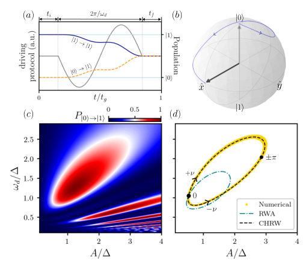
<figcaption class="paper-figure-caption"><b>Fig 1.</b> FIG. 1. LZSM dynamics in an ideal two-level system. (a) Driving protocol (left axis, grey line), consisting of two idle times ti, tf, and one single-period sinusoidal pulse. The driving parameters correspond to (A/∆, ωd/∆) = (1.02, 1.78). Blue and orange lines show the evolution of the population over time (right axis). (b) Evolution on the Bloch sphere of the initial state |0⟩(grey arrow), onto the final state (|0⟩+ |1⟩)/ √</figcaption>
</figure>
<figure class="paper-figure-card">
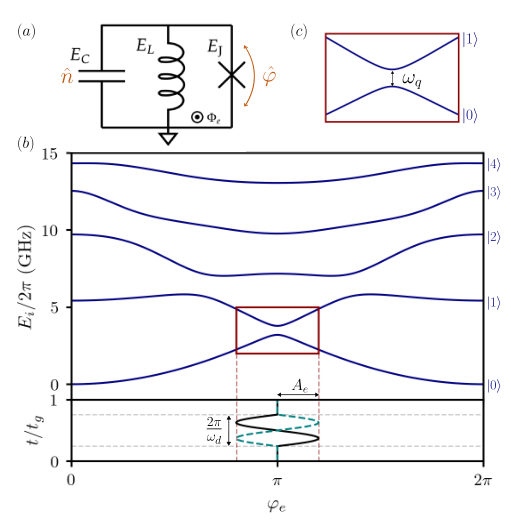
<figcaption class="paper-figure-caption"><b>Fig 2.</b> FIG. 2. (a) Superconducting fluxonium circuit, consisting of a capacitor, an inductor and a Josephson junction in par- allel. An external magnetic flux is threaded into the loop. (b) Upper panel: Low-energy spectrum of H0 as a func- tion of the control variable φe = 2πΦe/Φ0, in the case of {EJ, EC, EL} = {4, 1, 1} × 2π GHz. Lower panel: Driving protocol φe(t) including idle times, for the two possible sign choices for the amplitude Ae (solid and dashed lines, respec- tively). (c) Avoided crossing between states |0⟩and |1⟩near the sweet-spot φe = π, suitable for LZSM control.</figcaption>
</figure>
<figure class="paper-figure-card">
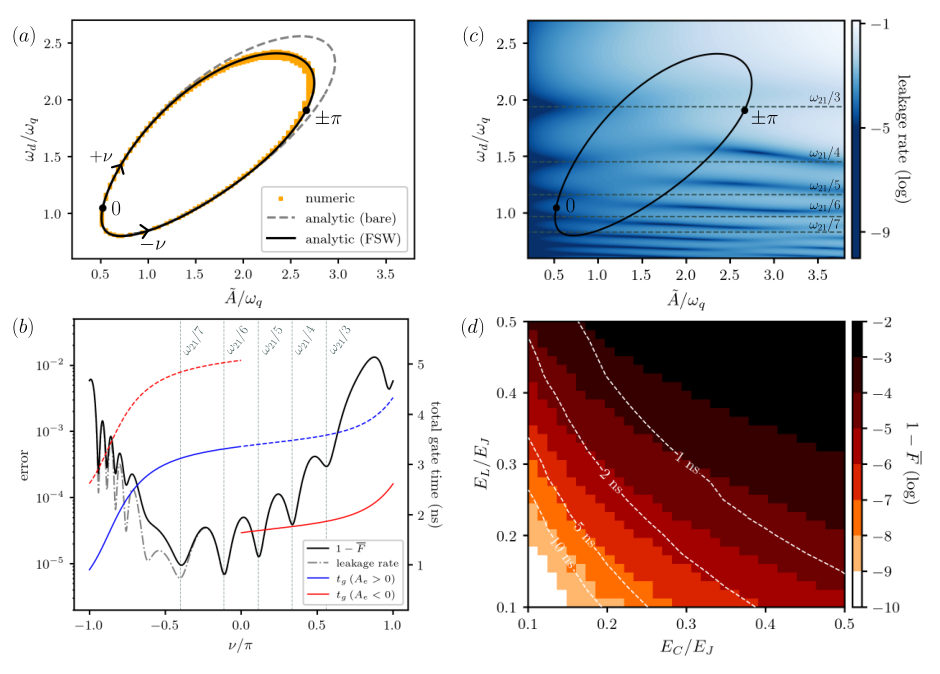
<figcaption class="paper-figure-caption"><b>Fig 3.</b> FIG. 3. Coherent error sources in the multi-level fluxonium circuit. (a) Region where P01 = 1/2 (orange) as a function of the driving parameters, compared with the analytical curves calculated from bare truncation (dashed line) and FSW effective two-level system (solid line). The architecture in (a, b, c) corresponds to {EJ, EC, EL} = {4, 1, 1} × 2π GHz. (b) Y (π/2) gate error calculated on the FSW analytical curve (dark line, left axis). The right axis shows the total gate time tg for both positive Ae (blue) and negative Ae (red). The solid segments correspond to the choice of minimal time for each value of ν. (c) Leakage rate L(tg) in log scale, as a function of the driving parameters....</figcaption>
</figure>
<figure class="paper-figure-card">
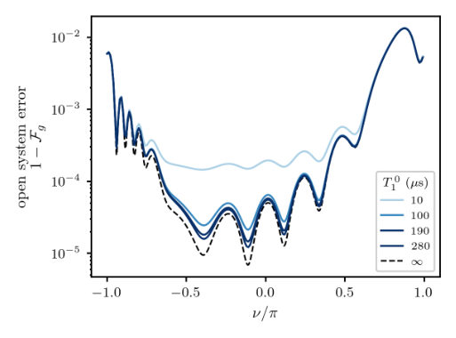
<figcaption class="paper-figure-caption"><b>Fig 4.</b> FIG. 4. Y (π/2) open-system gate error along the analyt- ical FSW curve, for the fluxonium circuit with parameters {EJ, EC, EL} = {4, 1, 1} × 2π GHz. The noise is modeled as dielectric loss in the capacitor, with an effective bath temper- ature Tb = 15 mK, and the different solid lines correspond to different values of T 0 1 (or system-bath coupling). The dashed line shows the closed-system calculation from Sec. IV.</figcaption>
</figure>
<figure class="paper-figure-card">
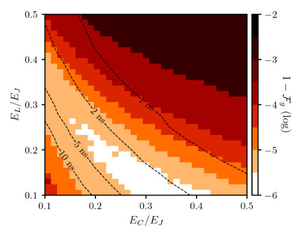
<figcaption class="paper-figure-caption"><b>Fig 5.</b> FIG. 5. Y (π/2) open-system gate error over architecture space within the fluxonium regime, taking the minimum value from ν ≥0. The noise is modeled as dielectric loss in the ca- pacitor, with bath temperature Tb = 15 mK and T 0 1 = 500 µs. The dashed contour lines show the total gate time for each architecture, with fixed EJ/2π = 4 GHz.</figcaption>
</figure>
</div>

<p><strong>Summary.</strong> The paper develops and optimizes fast quantum gates for fluxonium qubits using the Landau-Zener-Stückelberg-Majorana (LZSM) protocol. It rigorously models open system dynamics by incorporating multi-level effects and dissipation via a Floquet-Born-Markov master equation. The key finding is that minimizing gate error requires careful tuning of driving parameters to suppress leakage, leading to high-fidelity gates in the strong driving regime.</p>
<p><strong>Why it may be interesting.</strong> This work is highly relevant as it tackles the practical limitations of superconducting qubits by providing rigorous theoretical tools (FBM master equation) to analyze gate errors beyond simple RWA, which is crucial for scaling quantum processors.</p>
<details>
<summary>Detailed structure</summary>
<p><strong>Main problem.</strong> The primary goal is optimizing fast, high-fidelity quantum gates for low-frequency qubits while overcoming limitations imposed by standard resonant driving and accounting for multi-level structure and dissipation.</p>
<p><strong>Main result.</strong> LZSM protocols provide a superior method for achieving fast gate operations in fluxonium circuits. The fidelity optimization shows that leakage errors dominate the error budget, suggesting mitigation through specific driving frequency choices.</p>
<p><strong>Method.</strong> The authors employ advanced theoretical techniques including Landau-Zener-Stückelberg-Majorana (LZSM) driving protocols, Floquet theory, and deriving time-dependent master equations to model open-system dynamics.</p>
<p><strong>Model / system.</strong> The physical system is a superconducting fluxonium circuit. The analysis moves from the full Hamiltonian to effective two-level systems using techniques like bare truncation and the Floquet-Schrieffer-Wolf (FSW) Hamiltonian, culminating in a Floquet-Born-Markov master equation for open dynamics.</p>
<p><strong>Key observables.</strong> Gate fidelity ($ar{F}$), transition probability ($P_{01}$), leakage rate ($L$), and total gate time ($t_g$).</p>
<p><strong>Important parameters / regimes.</strong> Driving parameters include drive frequency ($\omega_d$) and amplitude ($A$); system parameters involve superconducting energies ($E_J, E_C, L_L$). The strong driving regime is of particular interest.</p>
<p><strong>Assumptions / limitations.</strong> Approximations include the Floquet-Born-Markov (FBM) master equation framework and using a 'moderated rotating-wave approximation' to simplify the time-dependent Liouvillian super-operator.</p>
<p><strong>Figures summary.</strong> Figures illustrate LZSM dynamics in ideal TLS, parameter space mapping for gate operations ($P_{01}=1/2$), and comparisons between calculated gate error (including leakage) versus optimized results across various driving parameters ($
u$).</p>
<p><strong>Paper structure.</strong> The paper builds from analyzing the basic LZSM protocol in an idealized two-level system to incorporating multi-level structure via FSW Hamiltonians, and finally developing a robust formalism using the Floquet-Born-Markov master equation to quantify open-system performance.</p>
</details>
<details>
<summary>Abstract</summary>
<p>Quantum gates based on resonant Rabi oscillations are inherently slow for small-frequency qubits. They are also prone to errors due to counter-rotating terms. However, when the anharmonicity is sufficiently high, as in the fluxonium architecture, alternative manipulation protocols can outperform standard resonant driving. In this work, we implement fast, high-fidelity quantum gates based on a one-period Landau-Zener-Stückelberg-Majorana (LZSM) driving protocol. We derive analytical expressions that simplify the exploration of the parameter space while accounting for the multi-level structure of the circuit. Furthermore, we analyze the role of leakage, discussing strategies to mitigate it and identifying regimes in which it becomes the dominant source of error. Finally, to evaluate the impact of dissipation on gate fidelity, we develop a robust formalism suitable for analyzing the open-system performance of quantum gates in the strong driving regime.</p>
</details>
<p><sub><a href="#top">↑ back to top</a></sub></p>

<p><a id="paper-2607.07970"></a></p>
<h3 id="associating-trajectories-with-quantum-processes-by-equivalent-spectra"><a href="http://arxiv.org/abs/2607.07970v1">Associating Trajectories with Quantum Processes by Equivalent Spectra</a></h3>
<p><strong>Authors:</strong> Elliott Tammaro, Sriram Gundla, Arunabh Pratik, Shyla Rathore<br>
<strong>Type:</strong> theory · <strong>Category:</strong> other · <strong>PDF:</strong> <a href="https://arxiv.org/pdf/2607.07970v1">https://arxiv.org/pdf/2607.07970v1</a><br>
<strong>Analysis basis:</strong> full PDF text, analyzed in chunks
<strong>Topic relevance:</strong> <code>quantum measurements</code> <strong>3/5</strong> · <code>Keldysh / 2PI / non-Gaussian methods</code> <strong>2/5</strong> · <code>methods for driven-dissipative</code> <strong>2/5</strong> · <code>interference shaping light</code> <strong>1/5</strong> · <code>measurement-induced transitions</code> <strong>1/5</strong></p>
<div class="figure-strip-hint">↔ Scroll figures horizontally</div>
<div class="paper-figures-scroll">
<figure class="paper-figure-card">
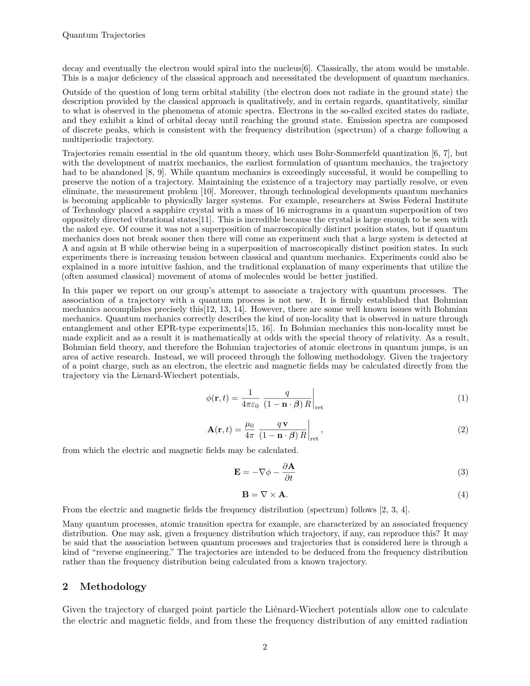
<figcaption class="paper-figure-caption"><b>Fig 1.</b> Low-resolution page preview, page 2</figcaption>
</figure>
<figure class="paper-figure-card">
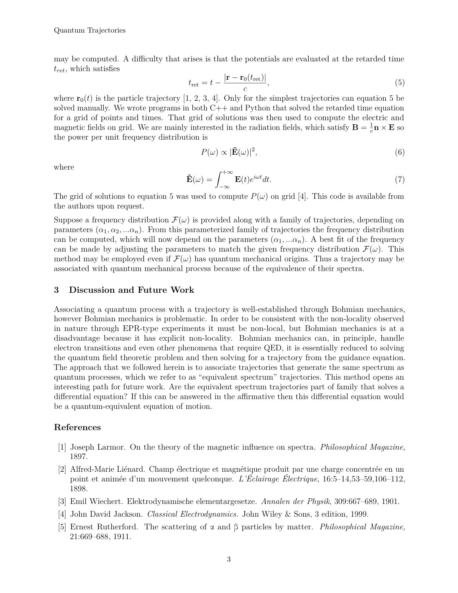
<figcaption class="paper-figure-caption"><b>Fig 2.</b> Low-resolution page preview, page 3</figcaption>
</figure>
<figure class="paper-figure-card">

<figcaption class="paper-figure-caption"><b>Fig 3.</b> Low-resolution page preview, page 4</figcaption>
</figure>
</div>

<p><strong>Summary.</strong> This paper proposes a method to connect classical particle trajectories to quantum processes by matching their emitted radiation power spectra. Instead of using guidance equations like Bohmian mechanics, the authors calculate the spectrum from classical point charges and fit parameters until they reproduce known quantum spectral signatures. This offers a potentially less problematic theoretical avenue for understanding trajectory concepts in quantum physics.</p>
<p><strong>Why it may be interesting.</strong> This approach offers an alternative theoretical framework to interpret quantum dynamics by grounding it in classical electrodynamics spectra, which could provide novel insights into semiclassical approximations or hidden variables theories without invoking explicit non-locality.</p>
<details>
<summary>Detailed structure</summary>
<p><strong>Main problem.</strong> The paper addresses the conceptual challenge of associating classical particle trajectories with quantum mechanical processes, an issue that Bohmian mechanics tackles but introduces non-locality conflicts.</p>
<p><strong>Main result.</strong> The authors propose a method to find 'equivalent spectrum' classical trajectories whose radiated power spectra match those derived from known quantum transitions, bypassing issues associated with standard guidance equations.</p>
<p><strong>Method.</strong> They use the Liénard-Wiechert potentials to calculate the radiation power spectrum generated by a point charge moving along an arbitrary trajectory and then fit parameters to match target quantum frequency distributions.</p>
<p><strong>Model / system.</strong> The model involves calculating electromagnetic fields ($\mathbf{E}$ and $\mathbf{B}$) from a classical point charge trajectory, using atomic transitions as the target quantum processes for spectral matching.</p>
<p><strong>Key observables.</strong> The power spectrum of emitted radiation, $P(\omega)$, which is proportional to $|	ilde{\mathbf{E}}(\omega)|^2$.</p>
<p><strong>Important parameters / regimes.</strong> The parameters defining the family of classical trajectories being fitted.</p>
<p><strong>Assumptions / limitations.</strong> The core assumption is that a classical trajectory can be characterized solely by matching its radiated spectrum to a quantum process's known spectrum, rather than deriving it from a guiding equation.</p>
<p><strong>Paper structure.</strong> The paper introduces the problem of trajectory association, details the spectral calculation using Liénard-Wiechert potentials for classical trajectories, presents the 'equivalent spectrum' matching technique, and concludes by discussing future work on deriving a governing differential equation.</p>
</details>
<details>
<summary>Abstract</summary>
<p>Quantum mechanics abandoned the classical notion of a particle trajectory, yet trajectories remain conceptually appealing for resolving foundational issues in quantum mechanics. Bohmian mechanics offers one route to associating trajectories with quantum processes, but it requires explicit non-locality to remain consistent with EPR-type experiments, placing it in tension with special relativity. We propose an alternative approach: rather than deriving trajectories from a quantum guidance equation, we search for classical trajectories whose radiated frequency spectra match those of quantum processes such as atomic transitions. Using the Liénard-Wiechert potentials, we compute the electric and magnetic fields generated by a point charge along a given trajectory, numerically solving the retarded-time and from these fields obtain the power spectrum of emitted radiation. By fitting the parameters of a chosen family of trajectories, we identify "equivalent spectrum" trajectories that reproduce a target frequency distribution, including ones of quantum mechanical origin. We discuss the implications of this method and propose future work to determine whether equivalent spectrum trajectories belong to a family governed by a differential equation, which would constitute a quantum-equivalent equation of motion.</p>
</details>
<p><sub><a href="#top">↑ back to top</a></sub></p>

<p><a id="paper-2607.07843"></a></p>
<h3 id="fluctuation-theorems-for-autonomous-work"><a href="http://arxiv.org/abs/2607.07843v1">Fluctuation theorems for autonomous work</a></h3>
<p><strong>Authors:</strong> Christopher Jarzynski, Sebastian Deffner, Saar Rahav<br>
<strong>Type:</strong> theory · <strong>Category:</strong> statistical mechanics · <strong>PDF:</strong> <a href="https://arxiv.org/pdf/2607.07843v1">https://arxiv.org/pdf/2607.07843v1</a><br>
<strong>Analysis basis:</strong> full PDF text, analyzed in chunks
<strong>Topic relevance:</strong> <code>non-equilibrium dynamics</code> <strong>3/5</strong> · <code>non-equilibrium universality</code> <strong>2/5</strong> · <code>Keldysh / 2PI / non-Gaussian methods</code> <strong>1/5</strong> · <code>correlated / nonlocal dissipation</code> <strong>1/5</strong> · <code>driven-dissipative phase transition</code> <strong>1/5</strong> · <code>methods for driven-dissipative</code> <strong>1/5</strong></p>
<div class="figure-strip-hint">↔ Scroll figures horizontally</div>
<div class="paper-figures-scroll">
<figure class="paper-figure-card">
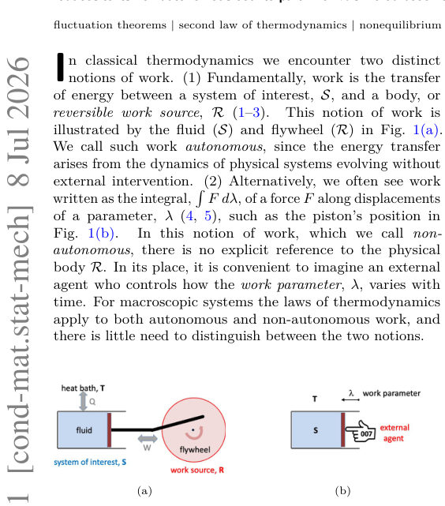
<figcaption class="paper-figure-caption"><b>Fig 1.</b> Fig. 1. (a) Autonomous work. A fluid, S, exchanges energy with a frictionless flywheel, R. The flywheel’s rotation couples to a piston that acts on the fluid. As R rotates, it performs positive or negative work on S, losing or gaining rotational kinetic energy in the process. (b) Non-autonomous work. An external agent performs work on the fluid by varying the piston’s position, λ. The work performed on S is R F dλ, where F is the force that the fluid exerts against the piston.</figcaption>
</figure>
<figure class="paper-figure-card">
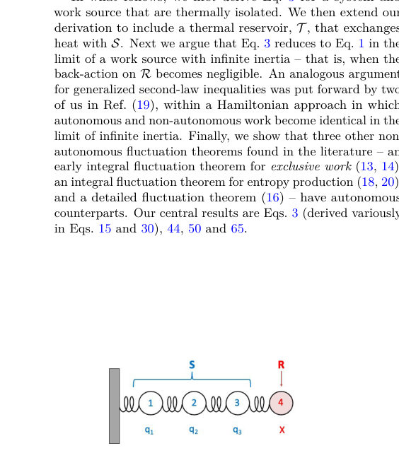
<figcaption class="paper-figure-caption"><b>Fig 2.</b> Fig. 2. Toy model illustrating our general setup. S consists of three particles of mass m, and R is a particle of mass M. The wall at the left is fixed, and springs denote harmonic couplings.</figcaption>
</figure>
</div>

<p><strong>Summary.</strong> This paper develops fluctuation theorems for work performed when a system interacts with a dedicated work source rather than an externally controlled parameter. By modeling the interaction using Hamiltonian dynamics involving a heat bath, the authors derive autonomous relations that generalize previous non-autonomous results. This provides a more fundamental understanding of energy dissipation and irreversibility in closed quantum or classical systems.</p>
<p><strong>Why it may be interesting.</strong> This work provides rigorous theoretical tools to analyze non-equilibrium processes (like work extraction) in closed or semi-closed systems by explicitly treating the energy exchange mechanism between components, which is crucial for understanding thermodynamics beyond simple external driving protocols.</p>
<details>
<summary>Detailed structure</summary>
<p><strong>Main problem.</strong> The primary goal is to derive fluctuation theorems for work performed in an autonomous setting, contrasting with existing results derived from non-autonomous frameworks.</p>
<p><strong>Main result.</strong> Autonomous versions of standard fluctuation theorems for work and entropy production are obtained, showing that the theorem reduces to the non-autonomous case when the work source's inertia becomes infinite.</p>
<p><strong>Method.</strong> The derivation uses Hamiltonian dynamics (or stochastic extensions) on a composite system ($RST$) and relies on analyzing probability distributions along deterministic trajectories to establish fluctuation relations.</p>
<p><strong>Model / system.</strong> The model consists of a System of Interest ($S$), coupled to a reversible Work Source ($R$), which itself interacts with an explicit Heat Bath ($T$). The dynamics are governed by the total Hamiltonian $H_{RST}$.</p>
<p><strong>Key observables.</strong> Autonomous Work ($W$), Free Energy Change ($\Delta F$), Stochastic Entropy Production ($\Delta \phi$), and Total Entropy Production ($\Sigma$).</p>
<p><strong>Important parameters / regimes.</strong> Temperature ($eta^{-1}$), System/Source masses ($M$), and the limit of infinite inertia for $R$.</p>
<p><strong>Assumptions / limitations.</strong> The analysis distinguishes between inclusive and exclusive conventions for energy counting, and in some derivations, assumes specific initial equilibrium distributions.</p>
<p><strong>Figures summary.</strong> Figure 1 illustrates the conceptual difference between autonomous work (energy exchange between fluid S and flywheel R) and non-autonomous work (external parameter variation). Figure 2 shows a toy model setup coupling S to R.</p>
<p><strong>Paper structure.</strong> The paper builds from establishing the Hamiltonian framework for $RST$, deriving conditional equilibrium states, defining various forms of work and entropy production based on conventions, and finally deriving the autonomous fluctuation theorems using these definitions.</p>
</details>
<details>
<summary>Abstract</summary>
<p>Classical fluctuation theorems for work have been obtained theoretically, and verified experimentally, within a non-autonomous framework in which work is performed on a system of interest, ${\cal S}$, by the external manipulation of a work parameter, such as a piston's position. Here we obtain fluctuation theorems within an autonomous framework in which ${\cal S}$ exchanges energy with a reversible work source, ${\cal R}$. The two subsystems, ${\cal R}$ and ${\cal S}$, interact with one another as they evolve under Hamiltonian or stochastic dynamics, without external intervention. In this setting, we must account for the back-action of ${\cal S}$ on ${\cal R}$, which is absent in the non-autonomous setting. We obtain autonomous versions of standard fluctuation theorems for work and entropy production. In each case, we argue, the autonomous fluctuation theorem reduces to its non-autonomous counterpart when ${\cal R}$'s inertia becomes infinitely large.</p>
</details>
<p><sub><a href="#top">↑ back to top</a></sub></p>

<p><a id="paper-2607.08760"></a></p>
<h3 id="hockey-stick-math543math-divergences"><a href="http://arxiv.org/abs/2607.08760v1">Hockey stick $f$-divergences</a></h3>
<p><strong>Authors:</strong> Fumio Hiai, Milán Mosonyi, Marco Tomamichel<br>
<strong>Type:</strong> theory · <strong>Category:</strong> other · <strong>PDF:</strong> <a href="https://arxiv.org/pdf/2607.08760v1">https://arxiv.org/pdf/2607.08760v1</a><br>
<strong>Analysis basis:</strong> full PDF text, analyzed in chunks
<strong>Topic relevance:</strong> <code>entanglement &amp; information structure</code> <strong>3/5</strong> · <code>Keldysh / 2PI / non-Gaussian methods</code> <strong>1/5</strong> · <code>correlated / nonlocal dissipation</code> <strong>1/5</strong> · <code>driven-dissipative phase transition</code> <strong>1/5</strong> · <code>methods for driven-dissipative</code> <strong>1/5</strong> · <code>non-equilibrium dynamics</code> <strong>1/5</strong> · <code>non-equilibrium universality</code> <strong>1/5</strong></p>
<div class="figure-strip-hint">↔ Scroll figures horizontally</div>
<div class="paper-figures-scroll">
<figure class="paper-figure-card">
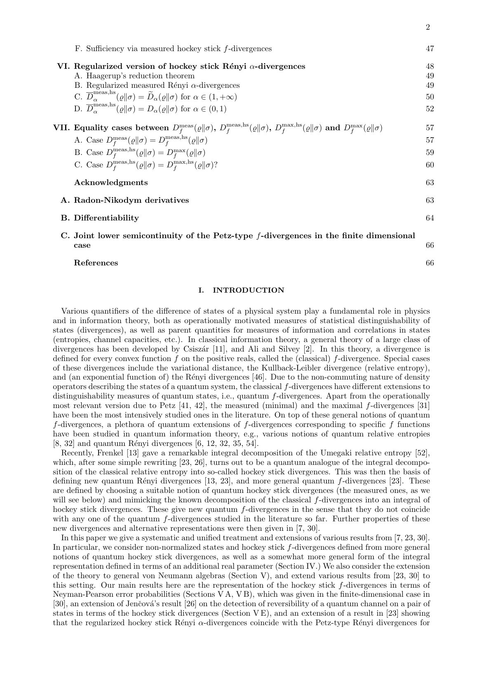
<figcaption class="paper-figure-caption"><b>Fig 1.</b> Low-resolution page preview, page 2</figcaption>
</figure>
<figure class="paper-figure-card">
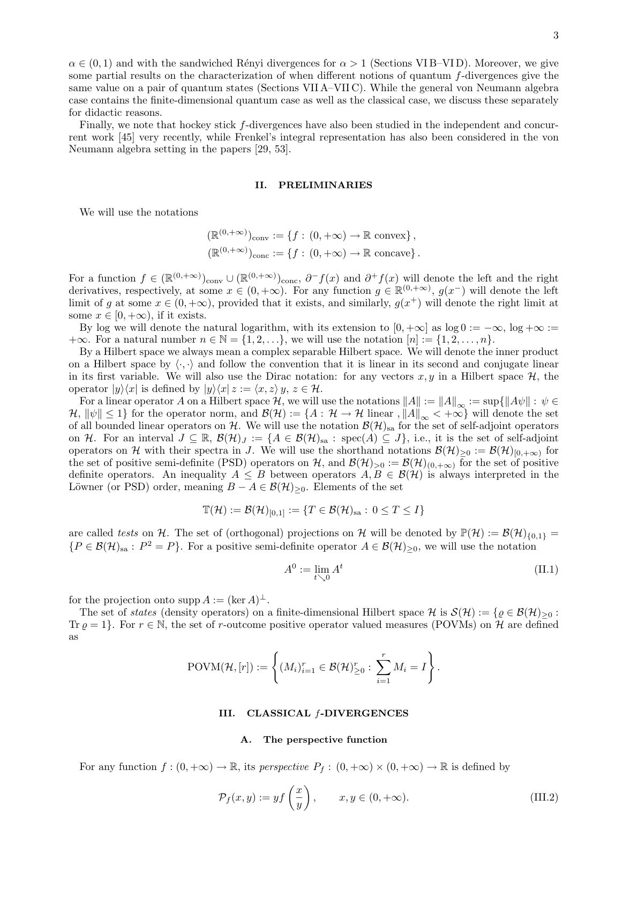
<figcaption class="paper-figure-caption"><b>Fig 2.</b> Low-resolution page preview, page 3</figcaption>
</figure>
<figure class="paper-figure-card">
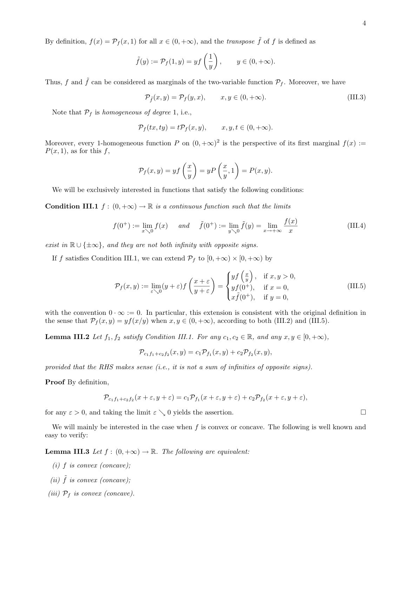
<figcaption class="paper-figure-caption"><b>Fig 3.</b> Low-resolution page preview, page 4</figcaption>
</figure>
<figure class="paper-figure-card">
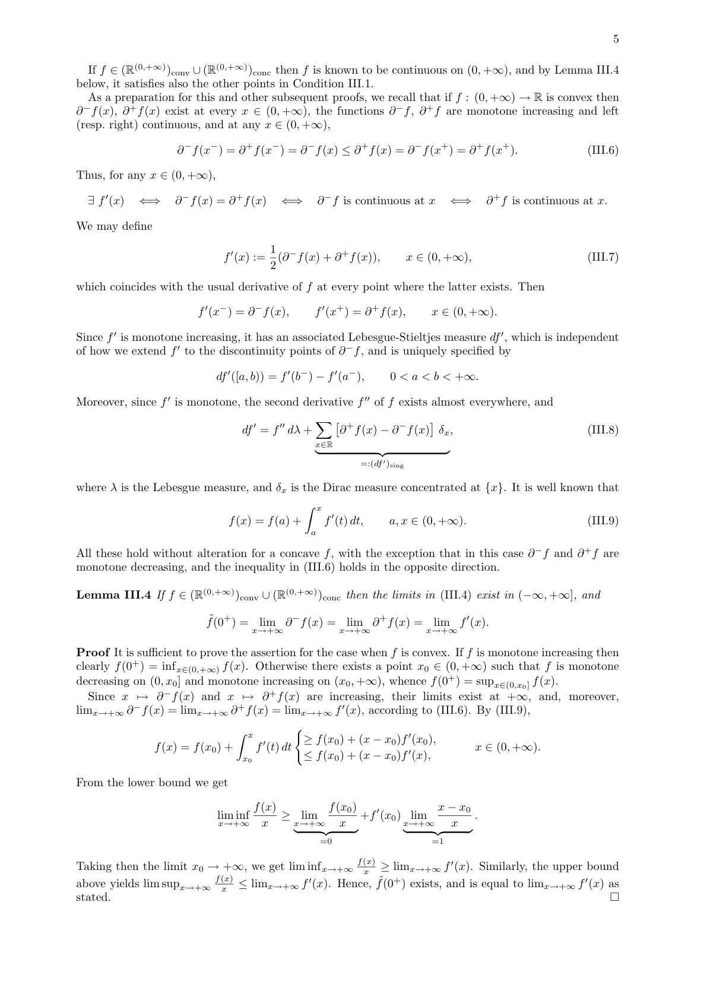
<figcaption class="paper-figure-caption"><b>Fig 4.</b> Low-resolution page preview, page 5</figcaption>
</figure>
<figure class="paper-figure-card">
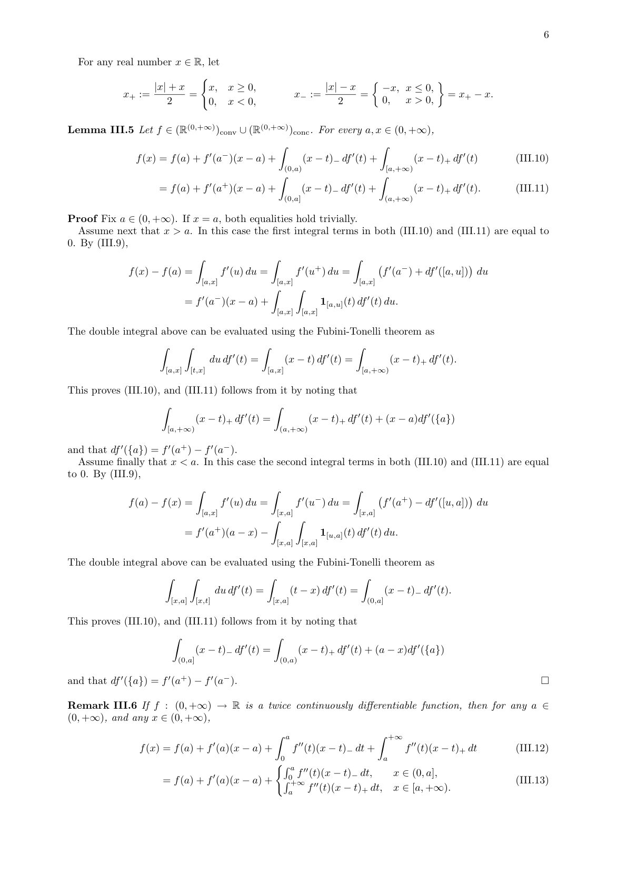
<figcaption class="paper-figure-caption"><b>Fig 5.</b> Low-resolution page preview, page 6</figcaption>
</figure>
</div>

<p><strong>Summary.</strong> This paper develops a comprehensive theory for novel quantum $f$-divergences based on 'quantum hockey stick divergences.' It unifies various results by connecting these measures to classical hypothesis testing error probabilities and establishing relationships between different forms of Rényi divergences. The work extends these powerful mathematical tools from finite dimensions to the abstract setting of general von Neumann algebras.</p>
<p><strong>Why it may be interesting.</strong> While highly mathematical, the generalization of divergence measures (like relative entropy) is fundamental for quantifying distinguishability between quantum states, which is crucial in understanding open quantum systems dynamics and process characterization.</p>
<details>
<summary>Detailed structure</summary>
<p><strong>Main problem.</strong> The paper aims to provide a systematic and unified treatment of quantum $f$-divergences, particularly those derived from 'quantum hockey stick divergences.'</p>
<p><strong>Main result.</strong> Key results include representing these divergences using Neyman-Pearson error probabilities, extending detection criteria for quantum channel reversibility, and establishing connections between regularized Rényi $\alpha$-divergences and Petz/sandwiched Rényi divergences.</p>
<p><strong>Method.</strong> The work employs advanced mathematical tools from measure theory, functional analysis (convexity/concavity properties), and operator algebras to generalize classical $f$-divergence concepts to quantum states.</p>
<p><strong>Model / system.</strong> The theory applies to quantum states described by density operators ($\varrho, \sigma$) on a Hilbert space, with extensions formulated for general von Neumann algebras.</p>
<p><strong>Key observables.</strong> Quantum $f$-divergences (measured and maximal), hockey stick $f$-divergences, and their representations in terms of Neyman-Pearson error probabilities.</p>
<p><strong>Important parameters / regimes.</strong> The analysis involves a real parameter $\alpha$ for Rényi divergences, and the theory is developed across finite dimensions up to general von Neumann algebras.</p>
<p><strong>Assumptions / limitations.</strong> The mathematical derivations rely on properties like positive homogeneity, existence of derivatives (left/right), and assumptions about the underlying measure spaces ($\nu \ll \mu$).</p>
<p><strong>Paper structure.</strong> The paper progresses logically from reviewing classical $f$-divergences to tackling finite-dimensional quantum divergences using hockey stick methods, extending this theory to general von Neumann algebras, and finally analyzing regularized Rényi $\alpha$-divergences.</p>
</details>
<details>
<summary>Abstract</summary>
<p>In this paper we give a systematic and unified treatment and extensions of various results on a new notion of quantum $f$-divergences defined from quantum hockey stick divergences, the theory of which has been developed recently in \cite{BHT_fdiv,HircheTomamichel_integral,LiuHircheCheng2025}. In particular, we consider non-normalized states and hockey stick $f$-divergences defined from more general notions of quantum hockey stick divergences, as well as a somewhat more general form of the integral representation defined in terms of an additional real parameter. We also consider the extension of the theory to general von Neumann algebras, and extend various results from \cite{HircheTomamichel_integral,LiuHircheCheng2025} to this setting. Our main results here are the representation of the hockey stick $f$-divergences in terms of Neyman-Pearson error probabilities, which was given in the finite-dimensional case in \cite{LiuHircheCheng2025}, an extension of Jen\v cová's result \cite{Jencova2023} on the detection of reversibility of a quantum channel on a pair of states in terms of the hockey stick divergences, and an extension of a result in \cite{HircheTomamichel_integral} showing that the regularized hockey stick Rényi $α$-divergences coincide with the Petz-type Rényi divergences for $α\in(0,1)$ and with the sandwiched Rényi divergences for $α>1$. Moreover, we give some partial results on the characterization of when different notions of quantum $f$-divergences give the same value on a pair of quantum states.</p>
</details>
<p><sub><a href="#top">↑ back to top</a></sub></p>

<p><a id="paper-2607.08708"></a></p>
<h3 id="absence-of-quantum-advantage-for-approximate-spin-glass-optimization"><a href="http://arxiv.org/abs/2607.08708v1">Absence of quantum advantage for approximate spin glass optimization</a></h3>
<p><strong>Authors:</strong> Dries Sels, Flaviano Morone<br>
<strong>Type:</strong> theory · <strong>Category:</strong> disordered systems and neural networks · <strong>PDF:</strong> <a href="https://arxiv.org/pdf/2607.08708v1">https://arxiv.org/pdf/2607.08708v1</a><br>
<strong>Analysis basis:</strong> full PDF text, analyzed in chunks
<strong>Topic relevance:</strong> <code>Keldysh / 2PI / non-Gaussian methods</code> <strong>3/5</strong> · <code>exotic spin models in light-matter</code> <strong>3/5</strong> · <code>analog quantum simulation</code> <strong>1/5</strong> · <code>methods for driven-dissipative</code> <strong>1/5</strong></p>
<div class="figure-strip-hint">↔ Scroll figures horizontally</div>
<div class="paper-figures-scroll">
<figure class="paper-figure-card">
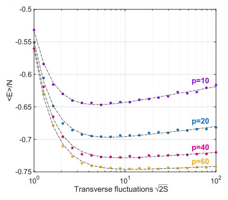
<figcaption class="paper-figure-caption"><b>Fig 1.</b> FIG. 1. Final energy reached by the semiclassical QAOA as a function of the effective spin, which controls the level of initial noise according to Eq. (3). Different depths p are shown, ranging from p = 10 (purple) to p = 60 (yellow). The QAOA parameters {γ}, {β} are taken directly from Ref. [9]. Dash-dotted lines show a simple heuristic fit, which capture both the small and large noise limits, i.e. the fitting function is a/S + b log(S) + d where a, b, d are free parameters, with a tending to a constant at large-p and b ∼1/p.</figcaption>
</figure>
<figure class="paper-figure-card">
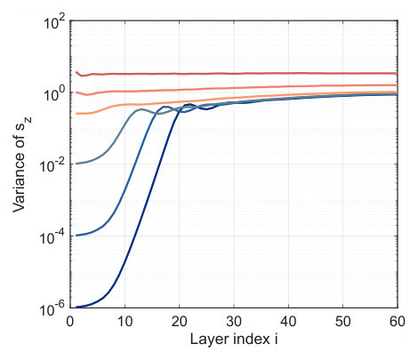
<figcaption class="paper-figure-caption"><b>Fig 2.</b> FIG. 2. Variance of the semiclassical z-magnetization during a p = 60 QAOA sequence. Different curves show different spin-S, which can be identified from the initial variance. For small S (red curves) we observe almost constant variance, while a pronounced regime of exponential growth appears at large S (blue curves).</figcaption>
</figure>
<figure class="paper-figure-card">
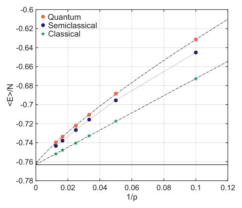
<figcaption class="paper-figure-caption"><b>Fig 3.</b> FIG. 3. Average energy of the SK model as a function of inverse circuit depth p. The quantum results (red dots) are taken from Ref. [9] , we use the same angles for the semiclassi- cal approximation (blue dots) and set the effective spin (noise) to S = 18. This value is close to the optimum S∗(p) over the displayed p-range. Moreover, since the minimum in Fig. 1 is broad, holding S = 18 fixed barely increases the energy above its optimum across p = 10, ..., 80. The green stars show the fully classical (noiseless) performance after re-optimizing the parameters as discussed in Ref. [18]. The (semi)classical re- sults were run on N = 16384 and averaged over 10 samples. The dash-dotted lines...</figcaption>
</figure>
</div>

<p><strong>Summary.</strong> This paper analyzes the performance of QAOA on the SK spin glass model using a semiclassical approximation. The research finds that while the algorithm converges towards the known Parisi value, it does not demonstrate a clear quantum advantage over classical scaling predictions. The study highlights the critical role of initial noise and parameter optimization in determining convergence rates.</p>
<p><strong>Why it may be interesting.</strong> The work provides detailed insights into the limitations of quantum algorithms like QAOA when applied to complex disordered systems, offering benchmarks for understanding where quantum computation might fail or converge classically.</p>
<details>
<summary>Detailed structure</summary>
<p><strong>Main problem.</strong> The study investigates whether the Quantum Approximate Optimization Algorithm (QAOA) provides a quantum advantage over classical methods for optimizing spin glass models.</p>
<p><strong>Main result.</strong> The analysis suggests that QAOA does not exhibit a true quantum advantage on SK spin glasses, with convergence rates matching theoretical expectations derived from semiclassical approximations.</p>
<p><strong>Method.</strong> The authors employ the Truncated Wigner Approximation (TWA) to perform a semiclassical analysis of QAOA applied to the Sherrington-Kirkpatrick model.</p>
<p><strong>Model / system.</strong> The system analyzed is the Sherrington-Kirkpatrick (SK) spin glass model, characterized by all-to-all Gaussian random couplings. The optimization process uses the QAOA protocol depth $p$.</p>
<p><strong>Key observables.</strong> Final expected energy $\langle E 
angle$, residual error $\delta = \langle H_c 
angle/N - E_P$, and spin fluctuations ($\sigma_z$-magnetization).</p>
<p><strong>Important parameters / regimes.</strong> Circuit depth ($p$), effective spin parameter ($S$), and the Parisi value ($E_P$).</p>
<p><strong>Assumptions / limitations.</strong> The primary approximation is the Truncated Wigner Approximation (TWA), which treats quantum dynamics semiclassically.</p>
<p><strong>Figures summary.</strong> Figures illustrate the non-monotonic dependence of final energy on $S$ for fixed depths, and plot the residual error $\delta(S, p)$ comparing exact quantum results to semiclassical fits across varying circuit depths $p$.</p>
<p><strong>Paper structure.</strong> The paper analyzes QAOA performance by first examining the scaling behavior of the residual error $\delta$ with respect to the effective spin parameter $S$, establishing optimal intermediate regimes. It then compares these findings against established theoretical limits, concluding that convergence follows a $\log(p)/p$ pattern.</p>
</details>
<details>
<summary>Abstract</summary>
<p>We perform a semiclassical, large-spin S, analysis of the quantum approximate optimization algorithm (QAOA) on the Sherrington-Kirkpatrick (SK) model, using the truncated Wigner approximation. Fixing the QAOA angles to their previously determined optimal S=1/2 values, we observe a non-monotonic dependence of the final energy on the spin. At small S the semiclassics is dominated by noise, while the large-S limit is constrained by the exponential growth of the initial fluctuations. For a depth-p QAOA one achieves the optimal balance at S of order p, resulting in a convergence of the final energy to the Parisi value like log(p)/p. We find that the semiclassics slightly outperforms the true spin-1/2 QAOA, and thus suggest they both converge to the Parisi value in the same way. Finally, removing all the initial noise, and re-optimizing the parameters to account for that change, results in superior performance with 1/p convergence.</p>
</details>
<p><sub><a href="#top">↑ back to top</a></sub></p>

<p><a id="paper-2607.07804"></a></p>
<h3 id="electron-phonon-functional-renormalization-group-of-fermi-liquid-instabilities"><a href="http://arxiv.org/abs/2607.07804v1">Electron-Phonon Functional Renormalization Group of Fermi Liquid Instabilities</a></h3>
<p><strong>Authors:</strong> C. Alexander Baum, Matteo Dürrnagel, Ronny Thomale, Lennart Klebl<br>
<strong>Type:</strong> theory · <strong>Category:</strong> strongly correlated electrons · <strong>PDF:</strong> <a href="https://arxiv.org/pdf/2607.07804v1">https://arxiv.org/pdf/2607.07804v1</a><br>
<strong>Analysis basis:</strong> full PDF text, analyzed in chunks
<strong>Topic relevance:</strong> <code>Keldysh / 2PI / non-Gaussian methods</code> <strong>3/5</strong> · <code>analog quantum simulation</code> <strong>2/5</strong> · <code>correlated / nonlocal dissipation</code> <strong>1/5</strong> · <code>driven-dissipative phase transition</code> <strong>1/5</strong> · <code>methods for driven-dissipative</code> <strong>1/5</strong></p>
<div class="figure-strip-hint">↔ Scroll figures horizontally</div>
<div class="paper-figures-scroll">
<figure class="paper-figure-card">
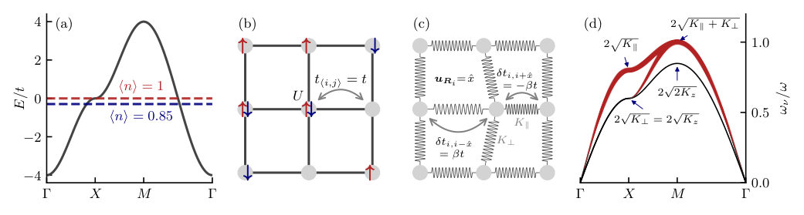
<figcaption class="paper-figure-caption"><b>Fig 1.</b> FIG. 1. The Hubbard model on the square lattice (b) with its band structure (a). We indicate the Fermi level at half filling ⟨n⟩= 1 as dashed red line, and the slightly doped case ⟨n⟩= 0.85 as dashed blue line. Panel (c) presents a schematic for the phonon spring model and the electron phonon coupling induced by a local perturbation at site Ri. The Phonon band structure is depicted in (d), showing how the spring constants K∥, K⊥, Kz influence the phonon dispersion. The modes with longitudinal component have non-zero electron-phonon coupling [red, line thickness corresponding to its strength s(ν) q = P</figcaption>
</figure>
<figure class="paper-figure-card">
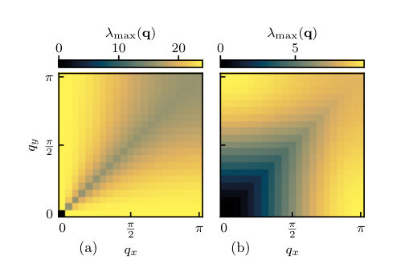
<figcaption class="paper-figure-caption"><b>Fig 2.</b> FIG. 2. Maximum eigenvalue of the phonon-mediated re- tarded interaction vertex Eq. (20) as a function of q in the top right corner of the Brillouin zone. For ωn = 0 (a), there is a discontinuity at q = 0 as the M →Γ and X →Γ lim- its differ. This discontinuity does not occur for any nonzero transfer frequency, such as ωn = 1 (b). The other parameters are given as λ = 1, ω = 1 and K⊥= K∥/2 (cf. Section IV for definitions).</figcaption>
</figure>
<figure class="paper-figure-card">
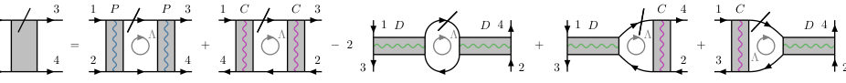
<figcaption class="paper-figure-caption"><b>Fig 3.</b> FIG. 3. The flow of the static vertex V S,Λ in channel decomposition. The wiggly lines indicate the phonon propagator contained in the retarded vertex which contributes to the static part of the renormalized vertex with different frequencies for each channel [cf. Eqs. (29) to (31)].</figcaption>
</figure>
<figure class="paper-figure-card">
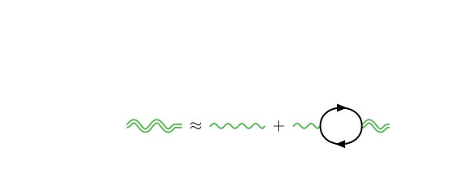
<figcaption class="paper-figure-caption"><b>Fig 4.</b> FIG. 4. The lowest order correction to the phonon propagator amounts to an RPA-like series through the Phonon Dyson Eq. (37).</figcaption>
</figure>
<figure class="paper-figure-card">
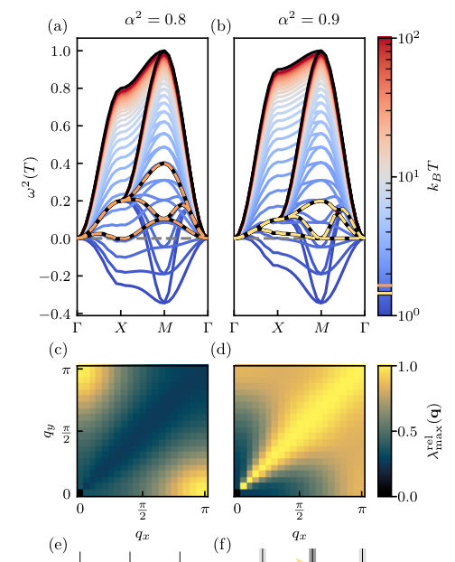
<figcaption class="paper-figure-caption"><b>Fig 5.</b> FIG. 5. (a,b): Renormalization of the phonon bands accord- ing to Eq. (39) for λ = 0.4, ω = 1 and α2 ∈{0.8, 0.9} (left to right) as the temperature is decreased. Renormalized phonon bands at the critical temperatures kBTc/t ≈1.65 (1.45) are given in orange (yellow). For low α there is an instability at q = X and for high α we have a simultaneous instability on the line between Γ and M. (c,d): Normalized leading eigen- values for each q of the effective electron-electron interaction for the same parameters and U = 0 in the D-RPA. The critical scales in the RPA Λc/t = 3.31 (2.83) have a roughly linear re- lationship to the critical temperatures here. Panels (e,f) show the real-space structure...</figcaption>
</figure>
</div>

<p><strong>Summary.</strong> This work develops an advanced Functional Renormalization Group (FRG) technique to treat correlated electron models that explicitly include electron-phonon coupling. By unifying these interactions, the method allows for a comprehensive analysis of competing electronic instabilities—such as charge density waves or superconductivity—in systems like the Hubbard model on a square lattice. It represents a significant theoretical advance for understanding emergent order in strongly coupled quantum materials.</p>
<p><strong>Why it may be interesting.</strong> While focused on condensed matter correlations, the use of advanced many-body techniques like FRG for coupled quantum systems provides methodological insights applicable to open quantum systems where coupling to a bosonic bath (phonons/environment) is crucial.</p>
<details>
<summary>Detailed structure</summary>
<p><strong>Main problem.</strong> The study aims to formulate a unified theoretical framework for correlated electron systems that treats electronic interactions and electron-phonon coupling (EPC) on equal footing when analyzing Fermi liquid instabilities.</p>
<p><strong>Main result.</strong> The functional renormalization group (FRG) approach successfully analyzes the competition between various electronic orders (charge, spin, nematicity, superconductivity) driven by both electronic correlations and EPC in a single formalism.</p>
<p><strong>Method.</strong> The core method is the Functional Renormalization Group (FRG), which allows for the simultaneous treatment of electronic and phononic degrees of freedom by integrating out phonons to derive retarded interactions.</p>
<p><strong>Model / system.</strong> The primary model analyzed is the Hubbard model on a square lattice coupled to acoustic phonon bands. The Hamiltonian includes terms for electron hopping, on-site repulsion (Hubbard U), and EPC derived from interatomic force constants.</p>
<p><strong>Key observables.</strong> Electronic order parameters related to charge, spin, nematicity, and superconducting pairing; phonon softening signatures.</p>
<p><strong>Important parameters / regimes.</strong> The Hubbard interaction strength (U), the electron-phonon coupling constant (g), and lattice geometry/dispersion relations ($\omega_{n,\mathbf{q}}$).</p>
<p><strong>Assumptions / limitations.</strong> Initial treatment assumes the harmonic approximation for phonons, and some derivations simplify by ignoring the renormalization of the retarded interaction ($V_{R,\Lambda}$).</p>
<p><strong>Figures summary.</strong> Figures illustrate band structures (Hubbard model), schematic representations of EPC from lattice perturbations, and flow diagrams showing how the static vertex renormalizes across different coupling channels.</p>
<p><strong>Paper structure.</strong> The paper develops the FRG ansatz for coupled electron-phonon systems, derives the necessary retarded interactions by integrating out phonons, analyzes the renormalization flow of the two-particle vertex in various channels (P, C, D), and applies this to the Hubbard model example.</p>
</details>
<details>
<summary>Abstract</summary>
<p>We formulate a functional renormalization group (FRG) ansatz for correlated electron models that incorporates electronic interactions as well as electron-phonon coupling (EPC) stemming from dispersive phonon bands. Particularizing to the RG flow of the electron-electron interaction vertex, we treat phonon- and electron-mediated Fermi liquid instabilities on equal footing as we analyze tentative electronic order parameters related to charge, spin, nematicity, and superconducting pairing. We illustrate the approach at the example of Peierls-type transitions we find for the Hubbard model on the square lattice coupled to acoustic phonon bands. Our method allows to incorporate full electronic and phononic ab initio input, and thus lends itself to the analysis of electronic order from intertwined electronic interactions and EPC at a microscopically most substantiated level.</p>
</details>
<p><sub><a href="#top">↑ back to top</a></sub></p>

<p><a id="paper-2607.08508"></a></p>
<h3 id="magic-gate-teleportation-structure-useful-resource-states-and-simpler-feedforward"><a href="http://arxiv.org/abs/2607.08508v1">Magic Gate Teleportation: Structure, Useful Resource States, and Simpler Feedforward</a></h3>
<p><strong>Authors:</strong> Yunzhe Zheng, Allen Zang, Aleksander Kubica<br>
<strong>Type:</strong> theory · <strong>Category:</strong> quantum information and computing · <strong>PDF:</strong> <a href="https://arxiv.org/pdf/2607.08508v1">https://arxiv.org/pdf/2607.08508v1</a><br>
<strong>Analysis basis:</strong> full PDF text, analyzed in chunks
<strong>Topic relevance:</strong> <code>quantum measurements</code> <strong>3/5</strong> · <code>entanglement &amp; information structure</code> <strong>2/5</strong> · <code>measurement-induced transitions</code> <strong>2/5</strong> · <code>Keldysh / 2PI / non-Gaussian methods</code> <strong>1/5</strong></p>
<div class="figure-strip-hint">↔ Scroll figures horizontally</div>
<div class="paper-figures-scroll">
<figure class="paper-figure-card">
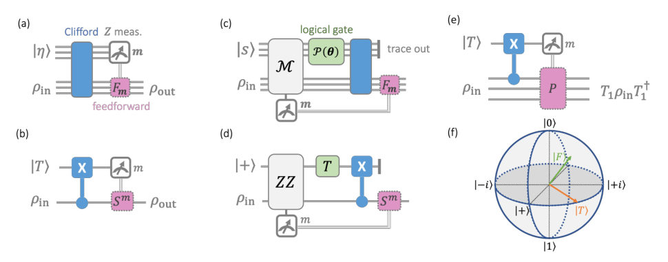
<figcaption class="paper-figure-caption"><b>Fig 1.</b> FIG. 1. (a) Magic gate teleportation (MGT) is a type of quantum gate teleportation that uses a non-stabilizer resource state |η⟩to implement a non-Clifford gate on an arbitrary input state ρin without revealing any information about it. MGT comprises a Clifford circuit, followed by Pauli Z measurements of all the qubits in the resource register; applying feedforward operators Fm for the measurement outcome m results in a deterministic MGT protocol. (b) The canonical MGT protocol that uses |T⟩= T |+⟩and implements the T gate. (c) Any MGT protocol using |η⟩= P(θ) |s⟩, where P(θ) commutes with the backpropagated measurements M, can be viewed as first encoding ρin into a stabilizer code...</figcaption>
</figure>
<figure class="paper-figure-card">
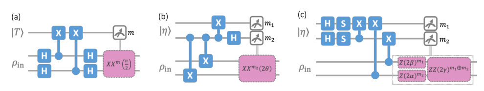
<figcaption class="paper-figure-caption"><b>Fig 2.</b> FIG. 2. Circuit implementation of deterministic MGT protocols obtained using Algorithm 1. Panels (a), (b) and (c) correspond to Exam- ples 2, 3 and 4, respectively.</figcaption>
</figure>
<figure class="paper-figure-card">
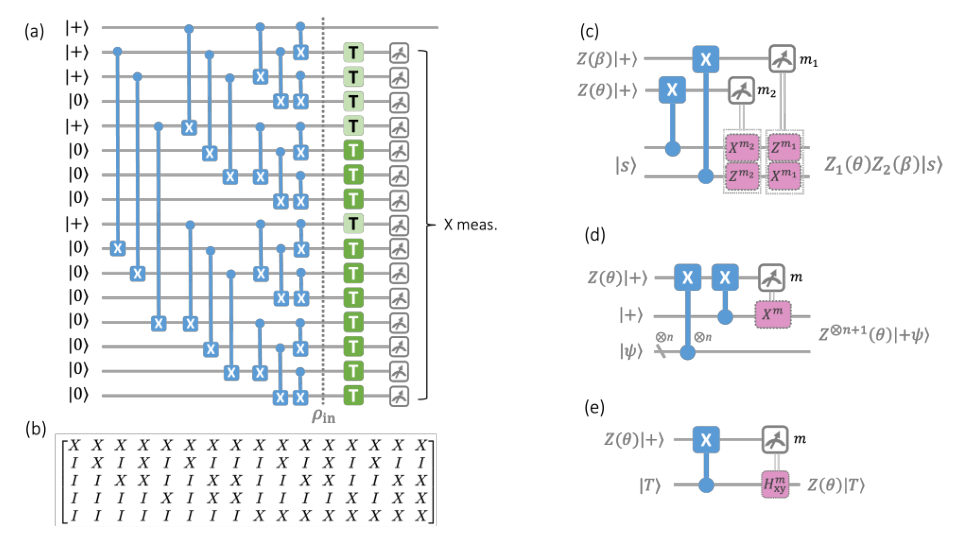
<figcaption class="paper-figure-caption"><b>Fig 3.</b> FIG. 3. (a) The 15-to-1 distillation circuit (adopted from Ref. [53]), with the stabilizer state ρin immediately before the layer of T gates. Qubits are labeled 1 through 16 from the top to the bottom. Five T gates indicated with black text can be implemented using deterministic MGT with Pauli feedforward operators. In (b), we specify five X-type stabilizers of ρin. (c) A two-qubit example illustrating a “simple” feedforward operator, i.e., for a suitably stabilized input state |s⟩a feedforward operator in the sequential teleportation of X1(θ) and Z1(β) can be implemented by an appropriate Pauli operator, yielding Z1(θ)Z2(β) |s⟩. (d) Ancilla-assisted MGT for an arbitrary n-qubit input state...</figcaption>
</figure>
</div>

<p><strong>Summary.</strong> This paper develops a comprehensive theory of Magic Gate Teleportation (MGT) protocols necessary for fault-tolerant quantum computing. It characterizes the required structure of resource states and proves that these states are highly constrained. Furthermore, it offers significant insights into simplifying the complex feedforward operations needed in these protocols by identifying conditions where they can be replaced by simpler Pauli operators.</p>
<p><strong>Why it may be interesting.</strong> This work provides deep theoretical constraints on the resources needed for fault-tolerant quantum computation, specifically detailing how non-Clifford gates can be implemented while maintaining information privacy, which is crucial for resource optimization in physical implementations.</p>
<details>
<summary>Detailed structure</summary>
<p><strong>Main problem.</strong> Developing a theoretical framework for Magic Gate Teleportation (MGT) protocols to implement non-Clifford quantum gates on arbitrary input states without revealing any information about those states.</p>
<p><strong>Main result.</strong> The paper establishes that useful resource states for MGT must be Clifford-equivalent to diagonal states, and it provides structural insights into how these protocols can be efficiently synthesized or simplified using Pauli operators.</p>
<p><strong>Method.</strong> The authors analyze the structure of MGT by backpropagating Pauli measurements, viewing the process as encoding the input state into a stabilizer code followed by a logical gate. They derive necessary conditions for information preservation and provide construction algorithms.</p>
<p><strong>Model / system.</strong> The model involves quantum gate teleportation using resource states ($\vert\eta
angle$) to implement non-Clifford unitaries ($U_0$). The process relies on Clifford gates, Pauli Z measurements, and subsequent feedforward operations.</p>
<p><strong>Key observables.</strong> The output state $
ho_{out}$, the structure of useful resource states (e.g., being Clifford-equivalent to diagonal states), and the feasibility of replacing non-Clifford feedforward operators with Pauli operators.</p>
<p><strong>Important parameters / regimes.</strong> The specific form of the resource state $\vert\eta
angle$, the input state $
ho_{in}$, and the measurement outcomes $m$.</p>
<p><strong>Assumptions / limitations.</strong> The primary assumption is that the input state $
ho_{in}$ must remain recoverable (no information revealed) throughout the teleportation process.</p>
<p><strong>Figures summary.</strong> Figures illustrate MGT protocols, showing how non-stabilizer states can implement gates via Pauli measurements and feedforward. They also demonstrate the structural view of MGT as encoding into a stabilizer code and show examples where complex feedforward operations can be simplified to Pauli operators.</p>
<p><strong>Paper structure.</strong> The paper develops the theory by first defining the protocol, then deriving structural theorems constraining useful resource states (e.g., Theorem 2 for single qubits). It progresses to analyzing deterministic implementation via feedforward operators ($F_m$) and concludes by identifying conditions under which these complex operations can be simplified using only Pauli operators.</p>
</details>
<details>
<summary>Abstract</summary>
<p>Quantum gate teleportation is a key technique in fault-tolerant quantum computation that uses resource states to implement logical gates. Here, we develop a theory of quantum gate teleportation protocols that implement non-Clifford gates on arbitrary input states without revealing any information about them; we refer to these protocols as magic gate teleportation (MGT). We uncover a hidden structure within MGT -- after backpropagating the Pauli measurements, MGT protocols can be viewed as encoding the input state into a stabilizer code heralded by the measurement outcomes, followed by a logical non-Clifford gate. Using this structure, we construct MGT protocols for any resource state obtained by applying commuting Pauli rotations to a stabilizer state, and provide an efficient algorithm for synthesizing their circuit implementations. Conversely, we prove that useful resource states for MGT, i.e., states that can be used for non-Clifford gates through MGT protocols, are necessarily Clifford-equivalent to diagonal states; in particular, the output state distilled from the $[\![5, 1, 3]\!]$ protocol is not useful for MGT. Finally, we identify conditions under which the feedforward operators can be implemented by Pauli operators, shedding light on the paradigm of algorithmic fault tolerance and simplifying the feedforward operations needed for quantum computing.</p>
</details>
<p><sub><a href="#top">↑ back to top</a></sub></p>

<p><a id="paper-2607.08315"></a></p>
<h3 id="magnetic-control-of-goos-hanchen-shifts-and-group-delay-time-in-monolayer-wsemath583math"><a href="http://arxiv.org/abs/2607.08315v1">Magnetic control of Goos-Hänchen shifts and group delay time in monolayer WSe$_2$</a></h3>
<p><strong>Authors:</strong> Youssef Fattasse, Rachid El Aitouni, Miloud Mekkaoui, Pablo Díaz, David Laroze, Ahmed Jellal<br>
<strong>Type:</strong> theory · <strong>Category:</strong> other · <strong>PDF:</strong> <a href="https://arxiv.org/pdf/2607.08315v1">https://arxiv.org/pdf/2607.08315v1</a><br>
<strong>Analysis basis:</strong> full PDF text, analyzed in chunks
<strong>Topic relevance:</strong> <code>spintronics-quantum-optics interface</code> <strong>3/5</strong> · <code>Keldysh / 2PI / non-Gaussian methods</code> <strong>1/5</strong> · <code>Kondo &amp; dissipative impurity</code> <strong>1/5</strong> · <code>exotic spin models in light-matter</code> <strong>1/5</strong> · <code>methods for driven-dissipative</code> <strong>1/5</strong> · <code>non-equilibrium dynamics</code> <strong>1/5</strong></p>
<div class="figure-strip-hint">↔ Scroll figures horizontally</div>
<div class="paper-figures-scroll">
<figure class="paper-figure-card">
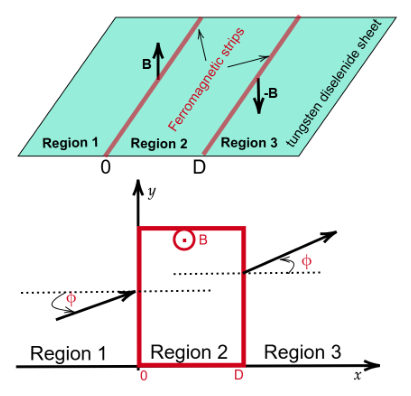
<figcaption class="paper-figure-caption"><b>Fig 1.</b> FIG. 1. The schematic of two ferromagnetic strips separated by a distance D, deposited on a tungsten diselenide sheet. This configuration defines three distinct regions induced by the presence of the two strips.</figcaption>
</figure>
<figure class="paper-figure-card">

<figcaption class="paper-figure-caption"><b>Fig 2.</b> FIG. 2. The GH shifts in transmissions St/λ versus the mag- netic field B in the K and K′ valleys for four values of incident angles ϕ, with incident energy E = 2.2 eV, and barrier width d = 60 nm.</figcaption>
</figure>
<figure class="paper-figure-card">
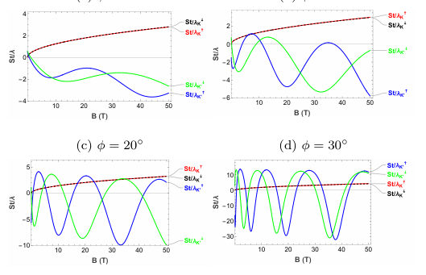
<figcaption class="paper-figure-caption"><b>Fig 3.</b> Figure 3 shows what happens to the Goos–H¨anchen (GH) shifts versus the incident angle for spin-up and spin-down elec- trons separately, in both the K and K′ valleys, at energies of 1.3 and 1.4 eV Figs. (3a,3c) and Figs. (3b,3d), respectively, with barrier width 15 nm, and magnetic field B=10 T. It is found that the GH shift remains zero from normal inci- dence up to ϕ = 30◦. For this reason, the plots are shown starting from 30◦. The GH shifts vanish at normal incidence due to symmetry, and increase with the angle, reaching a maximum around ϕ ≈60◦as a result of enhanced interfer- ence within the barrier. For larger incident angles, the GH shifts decrease rapidly as reflection becomes...</figcaption>
</figure>
<figure class="paper-figure-card">

<figcaption class="paper-figure-caption"><b>Fig 4.</b> FIG. 3. The GH shifts versus the incident angle for spin-up and spin-down electrons in the K↑↓and K′ ↑↓valleys at E = 1.3 and 1.4 eV, with barrier width d = 15 nm, and magnetic field B = 10 T.</figcaption>
</figure>
<figure class="paper-figure-card">
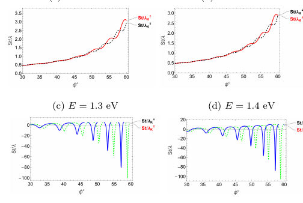
<figcaption class="paper-figure-caption"><b>Fig 5.</b> Figure 4 illustrates the group delay time (GDT) τt/τ0 as a function of the magnetic field B for different barrier widths d = 15, 30, 45, and 60 nm shown in Figs. (4a, 4b, 4c, 4d), respectively, considering both valleys (K and K′) and spin configurations (spin-up and spin-down). The results reveal a pronounced oscillatory behavior associated with Fabry–P´erot- type resonances induced by quantum interference inside the barrier region. For the narrow barrier shown in Fig. 4a with d = 15 nm, the GDT exhibits relatively few oscillations with moderate amplitudes. The resonant peaks are well separated, indicating weak confinement within the barrier. Moreover, the oscillatory behavior differs...</figcaption>
</figure>
</div>

<p><strong>Summary.</strong> This theoretical study examines the magnetic control over electron wave packet dynamics (GH shift and GDT) in monolayer WSe2 through a magnetic barrier. By solving an effective Hamiltonian, the authors demonstrate that external magnetic fields induce strong oscillations and spin/valley selectivity in these transport properties. This offers a promising pathway for designing highly controllable nanoscale devices for spintronics and valleytronics.</p>
<p><strong>Why it may be interesting.</strong> The ability to selectively manipulate spin and valley degrees of freedom via external fields in a 2D material is highly relevant for developing next-generation spintronic and valleytronic devices, connecting fundamental quantum transport theory to solid-state engineering.</p>
<details>
<summary>Detailed structure</summary>
<p><strong>Main problem.</strong> The study investigates how an external magnetic field influences the Goos-Hänchen (GH) shift and group delay time (GDT) in monolayer WSe2 when a magnetic barrier is present.</p>
<p><strong>Main result.</strong> The magnetic barrier strongly modulates both the GH shift and GDT, enabling selective control over the lateral shift and traversal time for individual spin and valley channels. This suggests a mechanism for tunable spatial and temporal separation of electronic wave packets.</p>
<p><strong>Method.</strong> Transport properties are calculated by solving an effective low-energy continuum Hamiltonian and extracting the GH shift and GDT from the phase of the transmission coefficient.</p>
<p><strong>Model / system.</strong> The system is monolayer WSe2 modeled using an effective low-energy Hamiltonian that incorporates spin-orbit coupling, Zeeman effects, and a magnetic barrier potential. The analysis treats charge carriers as Dirac-like fermions propagating through regions defined by this magnetic structure.</p>
<p><strong>Key observables.</strong> Goos–Hänchen (GH) shift, Group Delay Time (GDT), transmission amplitudes, reflection/transmission probabilities.</p>
<p><strong>Important parameters / regimes.</strong> Magnetic field strength ($B$), incident energy ($E$), angle of incidence ($\phi$), and barrier width ($D$ or $d$).</p>
<p><strong>Assumptions / limitations.</strong> The model uses an effective continuum approach; the magnetic field is realized via ferromagnetic strips creating a defined barrier region.</p>
<p><strong>Figures summary.</strong> Figures illustrate the dependence of normalized group delay time on the magnetic field for various incident energies and angles, showing oscillatory behavior.</p>
<p><strong>Paper structure.</strong> The paper establishes the physical model using an effective Hamiltonian, derives transmission coefficients by solving boundary value problems across pristine and barrier regions, and finally analyzes the phase-dependent observables (GH shift and GDT) to demonstrate magnetic control.</p>
</details>
<details>
<summary>Abstract</summary>
<p>We study the influence of an external magnetic field on the Goos-Hänchen (GH) shift and the group delay time (GDT) in monolayer WSe$_2$ in the presence of a magnetic barrier. The transport properties of Dirac-like carriers are obtained by solving the effective low-energy Hamiltonian and evaluating the corresponding transmission amplitudes. The GH shift and the GDT are subsequently extracted from the phase of the transmission coefficient. We systematically analyze their dependence on the magnetic field strength, incident energy, angle of incidence, and barrier width, with particular emphasis on the spin and valley degrees of freedom associated with the $K$ and $K'$ valleys. Our results show that the magnetic barrier strongly modulates both the GH shift and the GDT, leading to oscillatory behavior and pronounced spin-valley-dependent transport characteristics. Remarkably, the magnetic field enables selective control of the lateral shift and traversal time of carriers for each spin and valley channel, allowing for tunable spatial and temporal separation of electronic wave packets. This provides a mechanism for manipulating fermionic trajectories after transmission through the barrier in a highly controllable manner. Such tunability opens promising avenues for designing nanoscale devices based on spin and valley filtering, as well as for potential applications in information storage and processing within spintronic and valleytronic platforms.</p>
</details>
<p><sub><a href="#top">↑ back to top</a></sub></p>

<p><a id="paper-2607.07857"></a></p>
<h3 id="multi-agent-autoformalization-of-tensor-network-theory"><a href="http://arxiv.org/abs/2607.07857v1">Multi-agent Autoformalization of Tensor Network Theory</a></h3>
<p><strong>Authors:</strong> Sirui Lu, Erickson Tjoa, J. Ignacio Cirac<br>
<strong>Type:</strong> theory · <strong>Category:</strong> numerical methods · <strong>PDF:</strong> <a href="https://arxiv.org/pdf/2607.07857v1">https://arxiv.org/pdf/2607.07857v1</a><br>
<strong>Analysis basis:</strong> full PDF text, analyzed in chunks
<strong>Topic relevance:</strong> <code>methods for driven-dissipative</code> <strong>3/5</strong> · <code>entanglement &amp; information structure</code> <strong>2/5</strong> · <code>Keldysh / 2PI / non-Gaussian methods</code> <strong>1/5</strong> · <code>analog quantum simulation</code> <strong>1/5</strong> · <code>driven-dissipative phase transition</code> <strong>1/5</strong></p>
<div class="figure-strip-hint">↔ Scroll figures horizontally</div>
<div class="paper-figures-scroll">
<figure class="paper-figure-card">
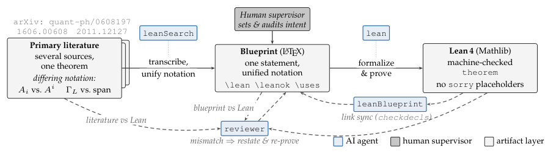
<figcaption class="paper-figure-caption"><b>Fig 1.</b> FIG. 1. Maintaining consistency across the literature, Lean, and the blueprint. A theorem stated in several sources under different notations (the matrices written Ai [28] or Ai [29, 30], injectivity phrased through the map ΓL [28] or as a spanning condition [29]) is transcribed once into the blueprint, in a single notation and with machine-readable links to the Lean declaration, and then proved in Lean (solid arrows; leanSearch scouts Mathlib, lean closes the proof; dotted lines attach each agent to the step it carries out). Two agents keep the layers consistent (dashed). leanBlueprint checks the mechanical links (every \lean reference resolves to a declaration and every \leanok to a...</figcaption>
</figure>
<figure class="paper-figure-card">
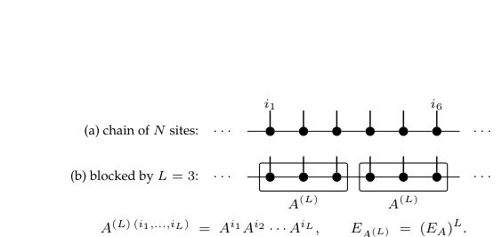
<figcaption class="paper-figure-caption"><b>Fig 2.</b> FIG. 2. Blocking in tensor networks. Given an MPS ten- sor A, grouping L consecutive sites yields a single coarse- grained tensor A(L) whose physical index is the composite in- dex (i1, . . . , iL) and whose transfer operator is the L-th power (EA)L of the transfer operator EA of A. The spectrum of (EA)L</figcaption>
</figure>
<figure class="paper-figure-card">
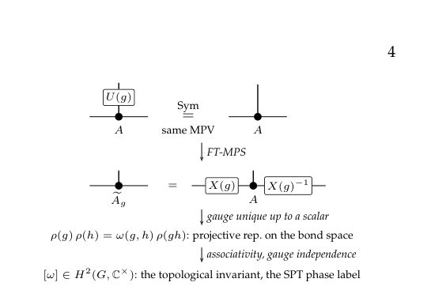
<figcaption class="paper-figure-caption"><b>Fig 3.</b> FIG. 3. From the fundamental theorem to the classification of symmetry protected topological phases. Top: the on-site symmetry U(g) acting on the physical leg of an injective MPS tensor A defines e Ag; the physical-layer assumption is that e Ag generates the same MPV family as A itself. Middle: FT-MPS turns this assumption into the virtual-layer gauge identity e Ai g = X(g) Ai X(g)−1 (Theorem 2; physical legs drawn up- ward, bond legs horizontal, as in Fig. 2). Bottom: X(g) is unique up to a scalar, so the gauges form a projective representation ρ with 2-cocycle ω; its class [ω] ∈H2(G, C×) is the gauge invari- ant labeling the symmetry-protected topological (SPT) phase, U(1)-valued after...</figcaption>
</figure>
<figure class="paper-figure-card">
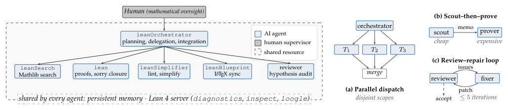
<figcaption class="paper-figure-caption"><b>Fig 4.</b> FIG. 4. System architecture and orchestration patterns. Left: a human supervisor sets mathematical intent; the orches- trator dispatches to four specialized interactive agents: a library scout (leanSearch), a proof writer (lean), a simplifier (leanSimplifier), and a blueprint synchronizer (leanBlueprint), together with an automated reviewer that also runs on each change proposed to the shared repository. All interactive agents (including the orchestrator) share a persistent memory and the Lean 4 server’s diagnostics, inspect, and loogle tools (Supplementary Material [42]), drawn as a single dashed region rather than one connection per agent per service. Right: the three recurring...</figcaption>
</figure>
<figure class="paper-figure-card">
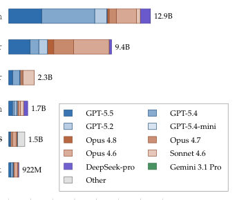
<figcaption class="paper-figure-caption"><b>Fig 5.</b> FIG. 5. Token usage by agent role, each bar broken down by the language models that role used. Proof writing and orchestration dominate, consistent with assigning the most capable models to the tasks where an error is most expensive.</figcaption>
</figure>
</div>

<p><strong>Summary.</strong> The paper introduces an agent-driven workflow using specialized LLMs to autoformalize advanced theorems in theoretical physics, demonstrated on Tensor Network Theory. By applying this system to the fundamental theorem of MPS and 1D topological phases, the authors showcase a powerful methodology for machine-checking complex physical mathematics. This effort establishes new computational libraries (TNLean) and highlights that controlling mathematical intent remains the key challenge in scaling such AI formalization efforts.</p>
<p><strong>Why it may be interesting.</strong> This work provides a blueprint for how AI can tackle foundational theoretical physics problems by automating rigorous mathematical proof construction in systems like Lean, which is highly relevant for developing formal quantum field theory or condensed matter models.</p>
<details>
<summary>Detailed structure</summary>
<p><strong>Main problem.</strong> The primary goal is the automated, research-level formalization of complex theorems from theoretical physics, specifically focusing on Tensor Network Theory.</p>
<p><strong>Main result.</strong> The authors successfully demonstrated an agent-driven workflow that autoformalized the fundamental theorem of matrix-product states (FT-MPS) and extended it to classify 1D symmetry-protected topological phases.</p>
<p><strong>Method.</strong> A multi-agent LLM system coordinates specialized agents using a structured mathematical blueprint, executing formal proofs within the Lean 4 proof assistant for machine verification.</p>
<p><strong>Model / system.</strong> The theory centers on Matrix-Product States (MPS) used to describe quantum states on one-dimensional chains. The formalism connects these states to topological invariants derived from group representations.</p>
<p><strong>Key observables.</strong> Topological invariant $[\omega] \in H^2(G, C^	imes)$, the MPS state $|\psi_N(A)
angle$, and the structure of the transfer operator $E_A$.</p>
<p><strong>Important parameters / regimes.</strong> The bond dimension ($D$), chain length ($N$), and the nature of the symmetry group $G$ are critical parameters.</p>
<p><strong>Assumptions / limitations.</strong> The main bottleneck identified is enforcing correct mathematical intent during autoformalization; furthermore, reliance on primary literature sources was necessary for full autonomy.</p>
<p><strong>Figures summary.</strong> Figures illustrate multi-layered consistency checks across literature, blueprints, and Lean code. Another figure shows the flow from FT-MPS to SPT phase classification via a virtual-layer gauge identity.</p>
<p><strong>Paper structure.</strong> The paper details the agent workflow (Blueprint $\leftrightarrow$ Lean), presents the formalization of FT-MPS (relating tensors via gauge transformations), extends this to 1D SPT phases, and concludes with a discussion on process limitations and infrastructure release.</p>
</details>
<details>
<summary>Abstract</summary>
<p>We build a team of specialized large language-model agents and present an agent-driven workflow for research-level formalization in theoretical physics, with the autoformalization of the fundamental theorem of matrix-product states as a demonstration. The agents, coordinated through a structured mathematical blueprint and periodic human review, orchestrated and executed the full formalization autonomously. For some statements, the agents were able to explore new proof routes that are not part of the standard literature. Along the way the agents produced extensive tensor-network and quantum-information libraries not previously available in Mathlib, Lean's mathematical library. As a physical application, the formalization also extends towards symmetry-protected topological phases in one dimension. We find that the main bottleneck in large-scale autoformalization is enforcing mathematical intent and we provide a detailed study of the full process and various subtleties involved. We release the codebase as the library \href{https://github.com/LionSR/TNLean}{TNLean}, together with a \nChapters{}-chapter \href{https://lionsr.github.io/TNLean/blueprint/}{blueprint} of the formalization effort.</p>
</details>
<p><sub><a href="#top">↑ back to top</a></sub></p>

<p><a id="paper-2607.08767"></a></p>
<h3 id="plaquette-a-hardware-aware-design-platform-for-fault-tolerant-quantum-computers"><a href="http://arxiv.org/abs/2607.08767v1">Plaquette: A hardware-aware design platform for fault-tolerant quantum computers</a></h3>
<p><strong>Authors:</strong> Raul Conchello Vendrell, Carlos Díaz López, Ish Dhand, Kshitij Kapoor, Davide Laureti, Marcello Massaro, Pranjal Nayak, Ivan Ogloblin, Martin B. Plenio, Shreya Prasanna Kumar, Matteo Santandrea, Varun Seshadri, Antal Száva, Trevor Vincent, Raphael Weber<br>
<strong>Type:</strong> theory · <strong>Category:</strong> quantum information and computing · <strong>PDF:</strong> <a href="https://arxiv.org/pdf/2607.08767v1">https://arxiv.org/pdf/2607.08767v1</a><br>
<strong>Analysis basis:</strong> full PDF text, analyzed in chunks
<strong>Topic relevance:</strong> <code>methods for driven-dissipative</code> <strong>3/5</strong> · <code>QC/QI experiment</code> <strong>2/5</strong> · <code>Keldysh / 2PI / non-Gaussian methods</code> <strong>1/5</strong> · <code>correlated / nonlocal dissipation</code> <strong>1/5</strong> · <code>driven-dissipative phase transition</code> <strong>1/5</strong></p>
<div class="figure-strip-hint">↔ Scroll figures horizontally</div>
<div class="paper-figures-scroll">
<figure class="paper-figure-card">
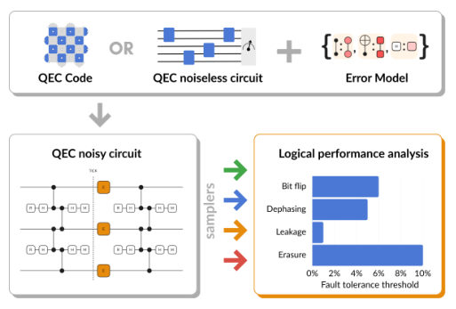
<figcaption class="paper-figure-caption"><b>Fig 1.</b> FIG. 1. Plaquette at a glance. A QEC code defines a noiseless circuit for extracting syndrome information; an er- ror model, specified once as CPTP channels, is compiled into a noisy circuit in the exact or approximate representation that the chosen sampler requires. This noisy circuit is sam- pled and decoded; the logical performance is returned as logical error rates, which are then aggregated into thresholds, sensitivities for different error sources, and physical-logical overheads.</figcaption>
</figure>
<figure class="paper-figure-card">
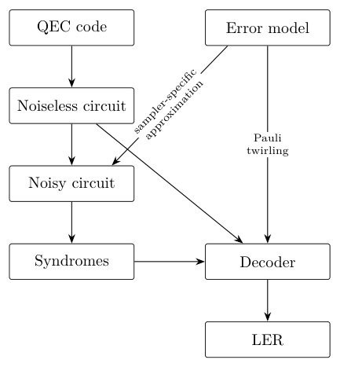
<figcaption class="paper-figure-caption"><b>Fig 2.</b> FIG. 2. Schematic of the Plaquette simulation workflow. A noiseless circuit is generated from a code. The noisy circuit is compiled from the noiseless circuit and the error model in the representation required by the chosen sampler. In parallel, a decoder model is compiled from the noiseless circuit and a Pauli-twirled version of the error model; the decoders included in Plaquette are initialized from the resulting detector error model. Sampling the noisy circuit produces syndromes, which are passed to the decoder; the decoder, in turn, yields the logical failure probability.</figcaption>
</figure>
<figure class="paper-figure-card">
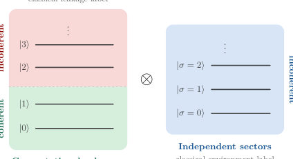
<figcaption class="paper-figure-caption"><b>Fig 3.</b> FIG. 3. State representation underlying the XPauli sampler. Each qubit carries an extended label rather than a bare two- level state. (i) Qubits in the computational subspace spanned by |0⟩and |1⟩(green) keep full coherence and are stored jointly as one stabilizer state; their level label reads comp, short for ‘computational’. (ii) A qubit in a leaked level (red) is instead tracked by a classical level label xi ∈{2, 3, . . . }. (iii) A separate sector label σi (blue) records the classical state of the qubit’s environment. Leaked levels and sectors are tracked classically: coherence is confined to the computational subspace, which is what keeps the simulation efficient. The explicit state...</figcaption>
</figure>
<figure class="paper-figure-card">
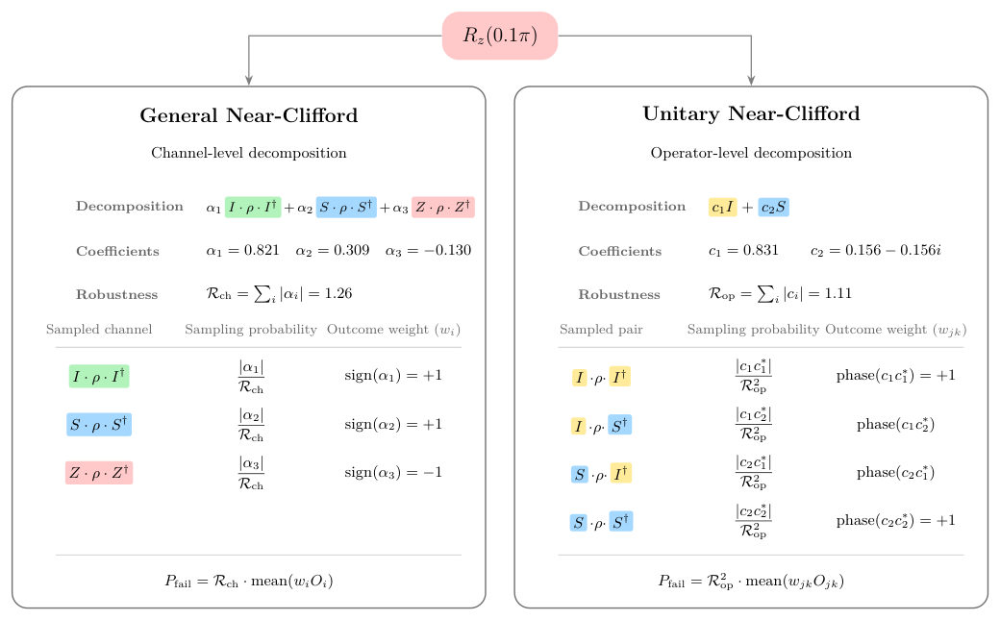
<figcaption class="paper-figure-caption"><b>Fig 4.</b> FIG. 4. The two quasiprobability near-Clifford samplers, illustrated on the coherent rotation Rz(0.1π). (Left) The general sampler decomposes the channel as E = P</figcaption>
</figure>
<figure class="paper-figure-card">
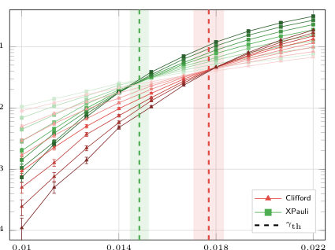
<figcaption class="paper-figure-caption"><b>Fig 5.</b> FIG. 7. Logical error probability of rotated planar codes of distance d = 5 −19 under the superconducting error model, as a function of the dimensionless noise strength γ controlling dephasing, heating, and cooling rates. Solid green curves show the leakage-aware XPauli estimates, while solid red curves show the Clifford-only Pauli-twirled approximation simulated with Stim; lighter to darker shades encode increasing code distance. The vertical dashed lines mark the finite- size-scaling threshold estimates, γth = 0.0148 ± 0.0004 for XPauli and γth = 0.0177 ± 0.0006 for Stim, with translucent bands showing the corresponding uncertainty intervals. These estimates show that the Pauli-twirled...</figcaption>
</figure>
</div>

<p><strong>Summary.</strong> The paper presents Plaquette, a novel software framework that allows researchers to calculate the true logical performance of fault-tolerant quantum computers directly from detailed physical noise models. By accepting general quantum channels derived from hardware imperfections (like leakage or heating), it moves beyond simplified Pauli approximations. This provides essential guidance for setting realistic error budgets and designing viable FTQC architectures.</p>
<p><strong>Why it may be interesting.</strong> This is highly relevant as it bridges the gap between abstract QEC theory and messy, real-world open quantum system physics encountered in AMO/quantum optics experiments.</p>
<details>
<summary>Detailed structure</summary>
<p><strong>Main problem.</strong> The core problem is determining the true logical performance of Fault-Tolerant Quantum Computers (FTQCs) when subjected to realistic, complex hardware noise that deviates from simple Pauli models.</p>
<p><strong>Main result.</strong> The authors introduce Plaquette, a framework that provides a direct path from specifying open-system physics (as quantum channels) to calculating the logical error rates of an FTQC built on it.</p>
<p><strong>Method.</strong> Plaquette accepts hardware noise models specified as Kraus operators or Lindblad dynamics and compiles them for various samplers: stabilizer sampling, XPauli sampler, near-Clifford samplers, and full-state simulation.</p>
<p><strong>Model / system.</strong> The framework is designed to model physical imperfections across multiple platforms, including leakage in superconducting transmons, intermediate-state scattering in neutral atoms, and heating in trapped ions. The noise is generally modeled using CPTP quantum channels.</p>
<p><strong>Key observables.</strong> Logical error rates, threshold surfaces, error budgets, and overhead estimates for fault tolerance.</p>
<p><strong>Important parameters / regimes.</strong> The vector of physical parameters ($\eta$) defining the hardware noise (e.g., decay rates, detunings).</p>
<p><strong>Assumptions / limitations.</strong> The framework highlights that relying only on Clifford-only simulations can lead to overly optimistic and inaccurate estimates compared to full channel analysis.</p>
<p><strong>Figures summary.</strong> Figure 1 summarizes the Plaquette workflow: specifying device physics as a channel, compiling it for sampling, and outputting logical error rates. Table I details Plaquette's capabilities across codes, error models, and platforms.</p>
<p><strong>Paper structure.</strong> The paper establishes the limitations of current noise models, introduces the Plaquette framework to accept general quantum channels, validates specialized samplers (XPauli, near-Clifford) against full simulation, and demonstrates its utility on three distinct physical hardware platforms.</p>
</details>
<details>
<summary>Abstract</summary>
<p>Hardware teams building fault-tolerant quantum computers (FTQCs) must decide which imperfections to suppress, and that decision requires the logical performance of the architecture under the device's actual noise. Hardware noise often departs from the stochastic Pauli models used by scalable stabilizer simulators: superconducting transmons leak out of the computational subspace, neutral atoms scatter through intermediate states, trapped ions heat as their motional modes absorb phonons, and miscalibrated controls over-rotate coherently. We present Plaquette, a theoretical framework and software suite that computes the logical performance of fault-tolerant architectures directly from the physics of such imperfections. In Plaquette, a hardware error model is specified once, as Kraus operators, Hamiltonian-Lindblad dynamics, or an experimentally reconstructed quantum channel, and is compiled automatically into the exact or approximate representation required by each of four sampler classes: stabilizer sampling for Pauli noise, the new XPauli sampler for leakage and environment sectors, near-Clifford samplers for coherent errors, and full-state simulation for exact reference calculations. We validate the XPauli and near-Clifford samplers against full-state simulation, which they can match within statistical uncertainty while Pauli twirling can fall short depending on the error model. We demonstrate the framework on three error models: leakage in superconducting qubits, intermediate-state scattering in neutral atoms, and heating in trapped ions. The size of the discrepancy between Plaquette and Clifford-only simulations varies with platform and noise process, so reliable thresholds, error budgets, and overhead estimates require the most accurate simulation available. Plaquette provides a direct path from the open-system physics of a device to the logical performance of the FTQC built on it.</p>
</details>
<p><sub><a href="#top">↑ back to top</a></sub></p>

<p><a id="paper-2607.08517"></a></p>
<h3 id="quantum-communication-lower-bounds-for-search-problems-via-matrix-discrepancy"><a href="http://arxiv.org/abs/2607.08517v1">Quantum Communication Lower Bounds for Search Problems via Matrix Discrepancy</a></h3>
<p><strong>Authors:</strong> Minbo Gao, Chenghua Liu, Guangxu Yang, Tianyi Zhang<br>
<strong>Type:</strong> theory · <strong>Category:</strong> quantum information and computing · <strong>PDF:</strong> <a href="https://arxiv.org/pdf/2607.08517v1">https://arxiv.org/pdf/2607.08517v1</a><br>
<strong>Analysis basis:</strong> full PDF text, analyzed in chunks
<strong>Topic relevance:</strong> <code>quantum measurements</code> <strong>3/5</strong> · <code>entanglement &amp; information structure</code> <strong>2/5</strong> · <code>Keldysh / 2PI / non-Gaussian methods</code> <strong>1/5</strong> · <code>measurement-induced transitions</code> <strong>1/5</strong> · <code>methods for driven-dissipative</code> <strong>1/5</strong></p>
<div class="figure-strip-hint">↔ Scroll figures horizontally</div>
<div class="paper-figures-scroll">
<figure class="paper-figure-card">
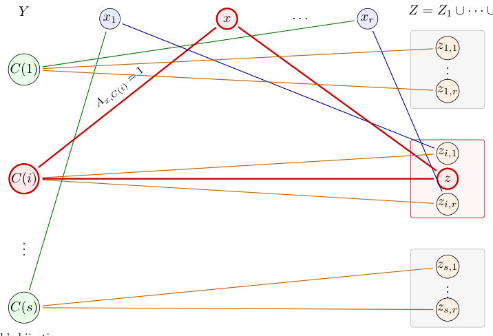
<figcaption class="paper-figure-caption"><b>Fig 1.</b> Figure 1: Visualization of the hard distribution in Definition 4.1. The set Z is partitioned into blocks Zi of size r. Each Fi is a bijection from X to Zi, and Bob’s bijection C makes the vertex C(i) adjacent to the whole block Zi. A valid output is a triangle {x, C(i), Fi(x)} for which the corresponding XY edge is present, i.e. Ax,C(i) = 1.</figcaption>
</figure>
</div>

<p><strong>Summary.</strong> This work develops a novel matrix discrepancy technique to derive lower bounds for one-way quantum communication required for search problems. By applying this method to collision finding and triangle finding, the authors establish new, tight quantum lower bounds surpassing previous results. This advances the understanding of quantum computational limits for fundamental combinatorial tasks.</p>
<p><strong>Why it may be interesting.</strong> While focused on communication complexity, the rigorous mathematical techniques involving operator norms, PSD matrices, and concentration inequalities are highly relevant tools used in quantum information theory that can inform analyses of open quantum systems or resource theories.</p>
<details>
<summary>Detailed structure</summary>
<p><strong>Main problem.</strong> The paper addresses establishing one-way quantum communication lower bounds for search problems, which are fundamentally more complex than decision problems due to their multiple valid outputs.</p>
<p><strong>Main result.</strong> They establish a tight $\Omega(N^{1/4})$ one-way quantum communication lower bound for collision finding and derive an $\Omega(\sqrt{\Delta V})$ quantum streaming space lower bound for triangle finding in graphs.</p>
<p><strong>Method.</strong> The core methodology involves developing a novel technique based on matrix discrepancy to analyze the success probability of quantum protocols by bounding associated Positive Operator-Valued Measures (POVMs) as PSD packings.</p>
<p><strong>Model / system.</strong> The analysis is set within the model of one-way quantum communication, where Alice sends a state $
ho_a$ and Bob measures using a POVM $\{M(b)_z\}_{z\in Z}$. The applications involve theoretical search problems like collision finding and triangle finding in graph streams.</p>
<p><strong>Key observables.</strong> Success probability ($ ext{psucc}$), quantum communication complexity ($k$), and streaming space requirements ($S$).</p>
<p><strong>Important parameters / regimes.</strong> The size of the input set ($N$), the number of edges/triangles, and structural parameters like $\Delta_V$ (max triangles per vertex).</p>
<p><strong>Assumptions / limitations.</strong> The method relies on decomposing validity indicators into factors leading to PSD operators that must satisfy packing constraints; it also uses matrix concentration arguments.</p>
<p><strong>Paper structure.</strong> The paper introduces the problem of search lower bounds, develops the matrix discrepancy technique by analyzing POVMs as PSD packings, and applies this method sequentially to derive specific lower bounds for collision finding and triangle finding.</p>
</details>
<details>
<summary>Abstract</summary>
<p>We study one-way quantum communication lower bounds for search problems. Unlike decision problems, search problems can have many valid outputs, which pose a fundamental barrier to standard quantum lower-bound techniques. We overcome this by developing a novel method based on matrix discrepancy, which allows us to bound the output measurements of a quantum protocol jointly.   As applications of our method, we establish the first tight quantum lower bounds for two fundamental search problems in some natural parameter regimes: collision finding and triangle finding. For collision finding, we prove a tight $Ω(N^{1/4})$ one-way quantum communication lower bound. Previously, the best-known quantum communication lower bound for collision finding was $Ω(N^{1/12})$ due to Göös and Jain (RANDOM 2022), and no stronger bound was known even under the one-way restriction. For triangle finding in graph streams, we prove a one-pass quantum streaming space lower bound of $Ω\left(\sqrt{Δ_V}\right)$ for graphs with $m$ edges, $Θ(m)$ triangles, and constant $Δ_E$, where $Δ_V$ and $Δ_E$ denote the maximum number of triangles sharing a common vertex and edge, respectively, under the condition that $1\le Δ_V\le m^{2/3}$. This constitutes the first nontrivial quantum space lower bound in this regime, matching the classical upper bound of Jayaram and Kallaugher (RANDOM 2021) up to logarithmic factors. Notably, our method also recovers the classical lower bound of Kallaugher and Price (SODA 2017) through an entirely different argument, avoiding their Boolean-Hidden-Matching reduction that breaks down for quantum protocols.</p>
</details>
<p><sub><a href="#top">↑ back to top</a></sub></p>

<p><a id="paper-2607.08353"></a></p>
<h3 id="signature-in-sound-mode-of-the-exciton-bilayer-two-dimensional-superfluid-transition"><a href="http://arxiv.org/abs/2607.08353v1">Signature in sound-mode of the exciton bilayer two-dimensional superfluid transition</a></h3>
<p><strong>Authors:</strong> Giovanni Midei, Filippo Pascucci, Milorad V. Milosevìc, Jacques Tempere, David Neilson, Andrea Perali<br>
<strong>Type:</strong> theory · <strong>Category:</strong> quantum gases · <strong>PDF:</strong> <a href="https://arxiv.org/pdf/2607.08353v1">https://arxiv.org/pdf/2607.08353v1</a><br>
<strong>Analysis basis:</strong> full PDF text, analyzed in chunks
<strong>Topic relevance:</strong> <code>Keldysh / 2PI / non-Gaussian methods</code> <strong>3/5</strong> · <code>analog quantum simulation</code> <strong>1/5</strong> · <code>correlated cavity matter</code> <strong>1/5</strong> · <code>driven-dissipative phase transition</code> <strong>1/5</strong> · <code>methods for driven-dissipative</code> <strong>1/5</strong></p>
<div class="figure-strip-hint">↔ Scroll figures horizontally</div>
<div class="paper-figures-scroll">
<figure class="paper-figure-card">
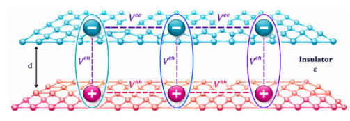
<figcaption class="paper-figure-caption"><b>Fig 1.</b> Figure 1. Schematic of the exciton bilayer system. Top layer of elec- trons, bottom layer of holes. Separated by an insulator of dielectric constant ε and thickness d.</figcaption>
</figure>
<figure class="paper-figure-card">
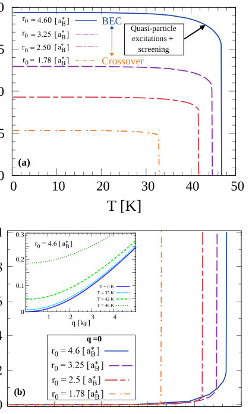
<figcaption class="paper-figure-caption"><b>Fig 2.</b> Figure 2. (a) Maximum gap energy ∆max as a function of the tem- perature T. The r0 are the inlayer interparticle distances for different densities. (b) Difference between the normal and anomalous polar- ization functions [ΠN −ΠA], normalized to ΠN, q = 0 as a func- tion of T. Inset: [ΠN −ΠA/ΠN] for r0 = 4.6a∗ B as a function of q for different T.</figcaption>
</figure>
<figure class="paper-figure-card">
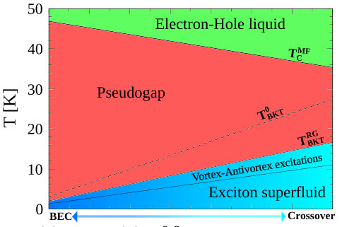
<figcaption class="paper-figure-caption"><b>Fig 3.</b> Figure 4. Temperature-density (T, n) phase-diagram for double- bilayer-graphene. T MF c : mean-field critical temperature. T 0 BKT and T RG BKT: BKT transition temperature without and with RG.</figcaption>
</figure>
<figure class="paper-figure-card">
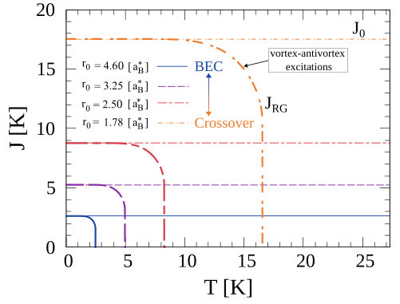
<figcaption class="paper-figure-caption"><b>Fig 4.</b> Figure 3. Stiffness J0(T) (horizontal lines) and renormalized stiff- ness JRG(T) as a function of temperature T for interparticle dis- tances r0, as labeled.</figcaption>
</figure>
<figure class="paper-figure-card">

<figcaption class="paper-figure-caption"><b>Fig 5.</b> Figure 4 shows the temperature–density phase diagram for DBG. For T &lt; T RG BKT, the system is an exciton superfluid, while for T &gt; T MF c it is a normal electron–hole liquid. In the intermediate temperature interval, T RG BKT &lt; T &lt; T MF c , there is still local pairing but unbinding of the vortex–antivortex pairs has destroyed the superfluid phase [42–44]. We denote this regime in Fig. 4 as the pseudogap. The temperature- density window over which vortex excitations renormalize the stiffness is also indicated. T 0 BKT is the unrenormalized transi-</figcaption>
</figure>
</div>

<p><strong>Summary.</strong> This work develops a theoretical method to detect exciton superfluidity in electron-hole bilayers by monitoring the Anderson-Bogoliubov sound velocity. The authors show that this velocity exhibits a sharp, measurable drop precisely at the BKT transition point. By incorporating finite-temperature screening and RG analysis, they provide an experimentally accessible signature for this neutral quantum phase.</p>
<p><strong>Why it may be interesting.</strong> It provides a concrete, measurable dynamical signature ($c_s(T)$ collapse) for an elusive quantum phase (exciton superfluidity), bridging complex many-body theory with potential experimental detection methods.</p>
<details>
<summary>Detailed structure</summary>
<p><strong>Main problem.</strong> The primary challenge is obtaining definitive evidence of exciton superfluidity in electrically neutral electron-hole bilayers at zero magnetic field.</p>
<p><strong>Main result.</strong> The Anderson-Bogoliubov sound velocity provides a measurable signature, showing a discontinuous drop to zero precisely at the Berezinskii-Kosterlitz-Thouless (BKT) transition temperature.</p>
<p><strong>Method.</strong> Theoretical analysis using path integrals, Renormalization Group (RG) techniques for phase fluctuations, and solving gap equations incorporating finite-temperature screening.</p>
<p><strong>Model / system.</strong> The system is an exciton bilayer formed by parallel electron-hole layers. The model spans the BCS-BEC crossover regime, allowing tuning between weakly coupled and strongly coupled superfluid states.</p>
<p><strong>Key observables.</strong> Anderson-Bogoliubov sound velocity ($c_s(T)$), phase stiffness ($J_0(T)$), compressibility ($\kappa_0(T)$), and the transition temperature ($T_{	ext{BKT}}^{	ext{RG}}$).</p>
<p><strong>Important parameters / regimes.</strong> Carrier density, temperature (especially near $T_{	ext{BKT}}$), and the ratio of interaction types (contact vs. dipolar).</p>
<p><strong>Assumptions / limitations.</strong> The analysis often assumes low-density regimes where certain contributions (like spin-wave terms) can be neglected or approximated.</p>
<p><strong>Figures summary.</strong> Figures illustrate the temperature dependence of various quantities, such as the maximum gap energy ($\Delta_{\max}$), polarization differences ($\Pi_N - \Pi_A$), and most critically, the sound velocity $c_s(T)$ tracking the superfluid transition.</p>
<p><strong>Paper structure.</strong> The paper builds from establishing the diagnostic observable (sound velocity) to developing the theoretical framework (RPA screening, RG flow) necessary to predict the BKT transition in this specific neutral exciton system.</p>
</details>
<details>
<summary>Abstract</summary>
<p>Obtaining definitive evidence of exciton superfluidity in electron-hole bilayers in zero magnetic field remains a major longstanding challenge since the condensate is electrically neutral, making its phase coherence difficult to detect directly. We show that the Anderson-Bogoliubov sound velocity provides a dynamical signature of exciton superfluidity. Across the BCS-BEC crossover, the velocity is known to discontinuously drop to zero at the Berezinskii-Kosterlitz-Thouless (BKT) transition. The magnitude of the drop has a strong density dependence. We compute this behavior, with the inclusion of finite-temperature screening, and determine the BKT transition using a renormalization-group approach. We further identify a temperature window which is experimentally accessible, where vortex-antivortex excitations strongly renormalize both the sound velocity and the transition temperature.</p>
</details>
<p><sub><a href="#top">↑ back to top</a></sub></p>

<p><a id="paper-2607.08709"></a></p>
<h3 id="robust-one-sided-device-independent-quantum-key-distribution-via-high-dimensional-steering"><a href="http://arxiv.org/abs/2607.08709v1">Robust One-Sided Device-Independent Quantum Key Distribution via High-Dimensional Steering</a></h3>
<p><strong>Authors:</strong> Monika Mothsara, Suraj Goel, Bohnishikha Ghosh, Vatshal Srivastav, Will McCutcheon, Mehul Malik, Gláucia Murta<br>
<strong>Type:</strong> both · <strong>Category:</strong> quantum information and computing · <strong>PDF:</strong> <a href="https://arxiv.org/pdf/2607.08709v1">https://arxiv.org/pdf/2607.08709v1</a><br>
<strong>Analysis basis:</strong> full PDF text, analyzed in chunks
<strong>Topic relevance:</strong> <code>quantum optics experiment</code> <strong>3/5</strong> · <code>QC/QI experiment</code> <strong>1/5</strong> · <code>entanglement &amp; information structure</code> <strong>1/5</strong> · <code>quantum measurements</code> <strong>1/5</strong></p>
<div class="figure-strip-hint">↔ Scroll figures horizontally</div>
<div class="paper-figures-scroll">
<figure class="paper-figure-card">
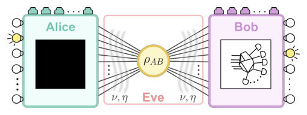
<figcaption class="paper-figure-caption"><b>Fig 1.</b> Figure 1: A schematic representation of a high-dimensional one-sided device-independent QKD (1sDI-QKD) scenario. An untrusted source distributes bipartite entangled states to Alice, who holds an untrusted device, and Bob. Both parties perform high-dimensional multi-outcome measurements, and the resulting correlations enable the demonstration of quan- tum steering. Higher dimensions are expected to provide im- proved robustness against noise (ν) and loss (η).</figcaption>
</figure>
<figure class="paper-figure-card">
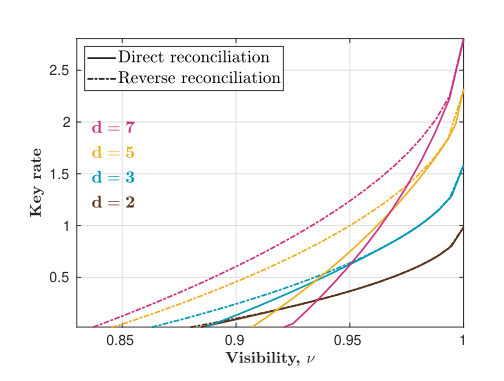
<figcaption class="paper-figure-caption"><b>Fig 2.</b> Figure 2: Direct versus reverse reconciliation key rates as a function of visibility. Colors correspond to dimensions d = 2 (brown), d = 3 (cyan), d = 5 (yellow), and d = 7 (magenta). Solid and dash-dot lines correspond to the direct reconciliation and reverse reconciliation key rates, respectively, for the spot-checking protocol with m = d + 1 measurement settings.</figcaption>
</figure>
<figure class="paper-figure-card">
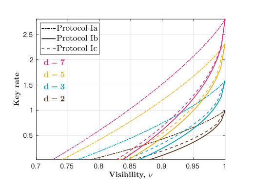
<figcaption class="paper-figure-caption"><b>Fig 3.</b> Figure 3: Comparison of key rates as a function of visibility ν under depolarizing noise, assuming ideal detection efficiency (η = 1). Colors correspond to dimen- sions d = 2 (brown), d = 3 (cyan), d = 5 (yellow), and d = 7 (magenta). Dash-dot, solid, and dashed lines corre- spond to Protocols Ia (two-basis), Ib (spot-checking), and Ic (multi-key-basis), respectively.</figcaption>
</figure>
<figure class="paper-figure-card">
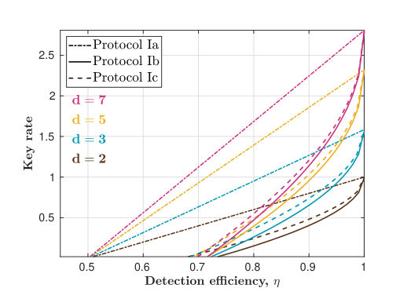
<figcaption class="paper-figure-caption"><b>Fig 4.</b> Figure 4: Comparison of key rates as a function of detection efficiency η under extra outcome strategy, assuming ideal visibility (ν = 1). Colors correspond to dimensions (brown), d = 3 (cyan), d = 5 (yellow), and d = 7 (magenta). Dash-dot, solid, and dashed lines correspond to Protocols Ia (two-basis), Ib (spot-checking), and Ic (multi- key-basis), respectively.</figcaption>
</figure>
<figure class="paper-figure-card">
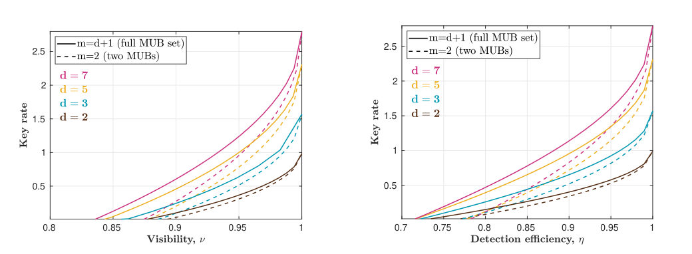
<figcaption class="paper-figure-caption"><b>Fig 5.</b> Figure 5: Key-rate advantage of using the full set of MUBs (m = d + 1) over two MUBs (m = 2) for d + 1-basis spot-checking protocol (Ib). (a) Key rate as a function of visibility ν under depolarizing noise, assuming ideal detection efficiency (η = 1). (b) Key rate as a function of detection efficiency η, assuming ideal visibility (ν = 1). Colors correspond to dimensions d = 2 (brown), d = 3 (cyan), d = 5 (yellow), and d = 7 (magenta). Solid lines correspond to steering correlations using m = d + 1 MUB measurement settings in dimension d, while dashed lines correspond to correlations using two MUB measurement settings (m = 2).</figcaption>
</figure>
</div>

<p><strong>Summary.</strong> The paper proposes and experimentally demonstrates a robust One-Sided Device-Independent Quantum Key Distribution (1sDI-QKD) protocol utilizing high-dimensional photonic entanglement. By leveraging quantum steering for security certification, the authors show that increasing the dimension enhances key rate robustness against noise and loss. This advances practical quantum communication by providing a scalable, device-independent method.</p>
<p><strong>Why it may be interesting.</strong> This work directly addresses the practical realization of information-theoretically secure quantum communication by moving beyond qubit systems to higher dimensions, which inherently improves resilience against realistic noise sources.</p>
<details>
<summary>Detailed structure</summary>
<p><strong>Main problem.</strong> The primary challenge is overcoming practical limitations of Quantum Key Distribution (QKD), such as noise, losses, and device imperfections.</p>
<p><strong>Main result.</strong> The authors demonstrate that increasing the dimension ($d$) enhances robustness in One-Sided Device-Independent QKD (1sDI-QKD), achieving positive key rates up to $d=7$ in principle.</p>
<p><strong>Method.</strong> They develop a systematic security analysis using quantum steering inequalities ($eta > eta_{	ext{LHS}}$) and evaluate achievable secret key rates via reverse reconciliation, complemented by a proof-of-principle experimental setup.</p>
<p><strong>Model / system.</strong> The protocol uses high-dimensional (HD) entanglement encoded in the transverse-spatial degree-of-freedom of photons. The security analysis is framed around certifying non-local correlations using quantum steering to rule out Local Hidden State models.</p>
<p><strong>Key observables.</strong> Steering violation ($eta$), secret key rates ($r_\infty$), guessing probability ($P_{	ext{guess}}$), and one-sided detection efficiency ($\eta_{	ext{exp}}$ vs. $\eta_{	ext{req}}$).</p>
<p><strong>Important parameters / regimes.</strong> Dimension $d$ (up to 11), visibility ($
u$), noise/loss parameters, and the ratio of observed to required efficiencies.</p>
<p><strong>Assumptions / limitations.</strong> The analysis relies on the fair-sampling assumption for Bob's side and explicitly accounts for Alice's no-click events to avoid loopholes. The experimental work assumes ideal components despite measured discrepancies.</p>
<p><strong>Figures summary.</strong> Figures compare direct vs. reverse reconciliation key rates, show steering detection parameters ($\mu$) versus observed violations, and plot required vs. achieved one-sided detection efficiencies across various dimensions.</p>
<p><strong>Paper structure.</strong> The paper progresses from theoretical security analysis (using quantum steering to bound key rates) to deriving the advantage of reverse reconciliation in 1sDI-QKD, culminating in a detailed description and results of a proof-of-principle experimental implementation using high-dimensional photonic entanglement.</p>
</details>
<details>
<summary>Abstract</summary>
<p>Quantum key distribution (QKD) brings the promise of communication with information-theoretic security but is limited in practice due to its susceptibility to noise, losses, and device imperfections. To address these challenges, we propose a robust high-dimensional (HD) one-sided device-independent QKD (1sDI-QKD) protocol and present a proof-of-principle experimental implementation using photons entangled in the transverse-spatial degree-of-freedom. We develop a systematic security analysis of HD 1sDI-QKD protocols, leveraging quantum steering to certify security, and evaluate achievable secret key rates for different measurement configurations and system dimensions using reverse reconciliation. Our analysis shows that increasing the dimension enhances robustness against both noise and loss. We then demonstrate the key experimental building blocks required for implementing the protocol: (a) a high-quality source of high-dimensional photonic entanglement, and (b) a fully programmable, high-dimensional multi-outcome measurement device operating in up to dimension 11. Using these components, we obtain positive key rates for all investigated dimensions under the fair-sampling assumption, with the highest key rates achieved for dimension d=7. Finally, we discuss the steps required for a practical, loophole-free implementation of 1sDI-QKD in realistic regimes of loss and noise.</p>
</details>
<p><sub><a href="#top">↑ back to top</a></sub></p>

<p><a id="paper-2607.08355"></a></p>
<h3 id="bright-and-dark-excitons-in-crsbr-local-ligand-field-character-and-band-coherent-optical-selection-rules"><a href="http://arxiv.org/abs/2607.08355v1">Bright and Dark Excitons in CrSBr: Local Ligand-Field Character and Band-Coherent Optical Selection Rules</a></h3>
<p><strong>Authors:</strong> Swagata Acharya, Jessica McDivitt, Dimitar Pashov, Mark van Schilfgaarde, Justin C. Johnson, Jeffrey L. Blackburn<br>
<strong>Type:</strong> theory · <strong>Category:</strong> strongly correlated electrons · <strong>PDF:</strong> <a href="https://arxiv.org/pdf/2607.08355v1">https://arxiv.org/pdf/2607.08355v1</a><br>
<strong>Analysis basis:</strong> full PDF text, analyzed in chunks
<strong>Topic relevance:</strong> <code>interference shaping light</code> <strong>3/5</strong> · <code>Keldysh / 2PI / non-Gaussian methods</code> <strong>1/5</strong> · <code>spintronics-quantum-optics interface</code> <strong>1/5</strong></p>
<div class="figure-strip-hint">↔ Scroll figures horizontally</div>
<div class="paper-figures-scroll">
<figure class="paper-figure-card">
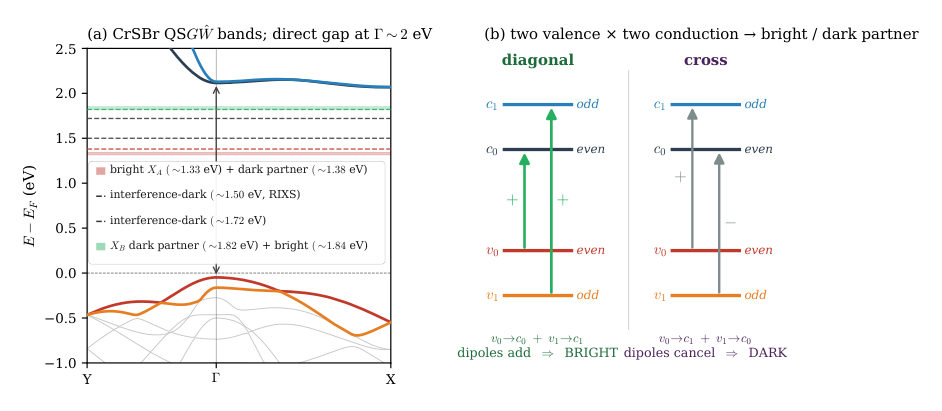
<figcaption class="paper-figure-caption"><b>Fig 1.</b> FIG. 1. The brightness mechanism in CrSBr. (a) QSGc W band structure along the Y-Γ-X cut, with the two topmost valence branches v0, v1 and the two lowest conduction branches c0, c1 highlighted in colour; the vertical arrow at Γ marks the direct quasiparticle (single-particle) gap of ∼2 eV. Solid coloured bands mark the bright XA (∼1.33 eV, red) and XB (∼1.84 eV, green) excitons, which sit below the gap by their respective binding energies. Dashed horizontal lines, identified in the in-panel key, mark the near-degenerate dark companions found in this work at ∼1.38 eV (the XA dark partner, dashed red), ∼1.50 and ∼1.72 eV (interference-dark states, dashed dark grey), and ∼1.82 eV (the XB dark...</figcaption>
</figure>
<figure class="paper-figure-card">
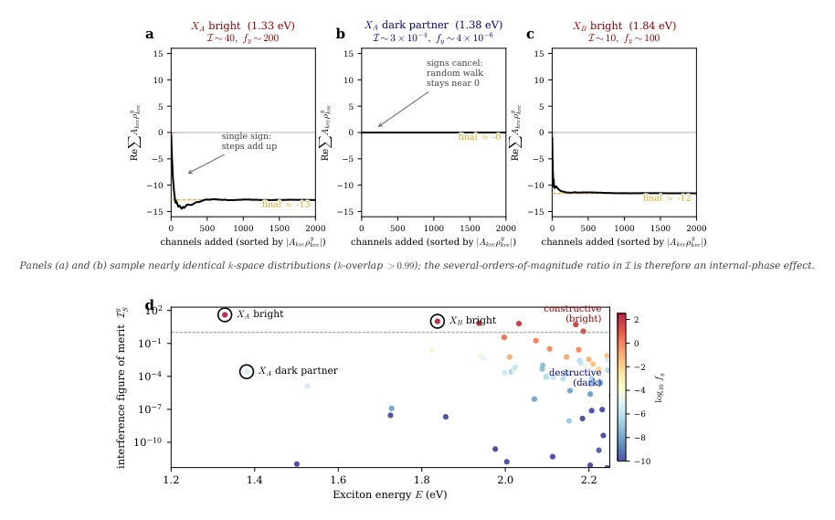
<figcaption class="paper-figure-caption"><b>Fig 2.</b> FIG. 2. Quantitative QSGc W verification of the bright/dark mechanism sketched in Fig. 1. (a-c) Running partial sum ReP</figcaption>
</figure>
<figure class="paper-figure-card">

<figcaption class="paper-figure-caption"><b>Fig 3.</b> FIG. 3. Per-exciton band-resolved BSE weight for four representative excitons in Table I: the bright XA at 1.33 eV and its dark partner at 1.38 eV (left two panels), the 1.50 eV sub-gap dark state, and the bright XB at 1.84 eV (right). Each panel uses a broken energy axis: the upper sub-panel zooms on the two lowest conduction branches c0, c1, the lower one on the two topmost valence branches v0, v1. Markers are restricted to the {v0, v1, c0, c1} block, coloured by branch (v0 red, v1 orange, c0 navy, c1 blue), and split laterally (red/navy left of the k-point, orange/blue right) so the nearly degenerate c0, c1 pair is resolvable. Within each panel the weights are renormalised to the maximum...</figcaption>
</figure>
</div>

<p><strong>Summary.</strong> This work elucidates the origin of exciton optical brightness in magnetic van der Waals semiconductors like CrSBr. It demonstrates that excitonic visibility is not solely determined by local character but by a symmetry-enforced interference rule between transition dipoles. Bright states result from constructive superposition, while dark states arise from destructive cancellation.</p>
<p><strong>Why it may be interesting.</strong> The concept that optical selection rules are governed by coherent superposition symmetries rather than just orbital composition is highly relevant for understanding light-matter interactions in complex quantum materials and artificial quantum emitters.</p>
<details>
<summary>Detailed structure</summary>
<p><strong>Main problem.</strong> The primary challenge is explaining the coexistence of intense 'bright' excitons with much dimmer companion states, despite both originating from the same single-particle electronic manifold.</p>
<p><strong>Main result.</strong> Brightness is determined by a symmetry-adapted interference rule between transition dipoles: bright states arise from constructive (sublattice-symmetric) superposition, while dark states result from destructive (sublattice-antisymmetric) cancellation.</p>
<p><strong>Method.</strong> The study employs advanced many-body calculations, specifically the Bethe-Salpeter Equation (BSE) built upon a quasiparticle self-consistent GW framework, to analyze the bare exciton spectrum.</p>
<p><strong>Model / system.</strong> The system is the magnetic van der Waals semiconductor CrSBr, which possesses an orthorhombic primitive cell containing two Cr atoms. The analysis treats the excitons as composite objects involving ligand-field, intersite, and ligand-assisted components.</p>
<p><strong>Key observables.</strong> Exciton binding energies (e.g., XA near 1.34 eV), optical oscillator strengths, and the Interference Figure of Merit ($I_{\alpha}^S$).</p>
<p><strong>Important parameters / regimes.</strong> Sublattice symmetry (symmetric vs. antisymmetric superposition); energy separation between bright/dark partners ($  ext{meV}$ scale).</p>
<p><strong>Assumptions / limitations.</strong> The analysis focuses on the <em>bare</em> exciton spectrum derived from BSE, which is necessary to isolate the fundamental electronic response before coupling to magnons or phonons.</p>
<p><strong>Figures summary.</strong> Figure 1 schematically shows that diagonal (sublattice-symmetric) dipole additions lead to bright states, while cross (sublattice-antisymmetric) additions cause destructive cancellation leading to dark states. Figure 2 quantitatively verifies this interference mechanism.</p>
<p><strong>Paper structure.</strong> The paper establishes the electronic structure via QSGcW, then uses BSE to analyze exciton character. The core argument develops by introducing the symmetry rule governing dipole interference (the $I_{\alpha}^S$ diagnostic) to distinguish bright from dark states, culminating in a detailed analysis of how this symmetry dictates optical visibility.</p>
</details>
<details>
<summary>Abstract</summary>
<p>Magnetic van der Waals semiconductors such as CrSBr host an intricate exciton landscape whose physical interpretation has converged only recently. A many-body Feynman diagrammatic approach based on quasiparticle self-consistent GW with electron-hole ladder vertex corrections to the screened Coulomb interaction has established the electronic band gap, excitonic orbital character, real-space extent, binding energies, and bosonic-coupling signatures of the bright XA exciton near 1.34 eV and the higher XB manifold near 1.8 eV. These results agree well with ARPES and magneto-optical experiments and supersede the early Rydberg-like assignment of the excitons. What has remained unresolved is why these intense bright excitons coexist, within a few tens of meV, with companion states that are several orders of magnitude darker despite drawing from essentially the same single-particle transition manifold. Here we show that brightness is a band-coherent property of the excitonic eigenfunctions: bright and dark partners are sublattice-symmetric and sublattice-antisymmetric superpositions of the same ligand-field-like Bloch transitions across the two Cr atoms of the orthorhombic primitive cell. The commonly used Frenkel and Wannier-Mott labels describe what an exciton is made of, but brightness requires a symmetry-adapted interference rule between transition dipoles. Disentangling this bare excitonic structure is a prerequisite for interpreting the optical response of CrSBr once magnon, phonon, and photon couplings are included.</p>
</details>
<p><sub><a href="#top">↑ back to top</a></sub></p>

<p><a id="paper-2607.07932"></a></p>
<h3 id="gate-induced-strain-on-a-two-dimensional-hole-gas-in-silicon"><a href="http://arxiv.org/abs/2607.07932v1">Gate induced strain on a two-dimensional hole gas in silicon</a></h3>
<p><strong>Authors:</strong> D. van der Bovenkamp, C. S. A. Müller, B. D. Pantiru, I. Bošnjak, M. Cignoni, Q. Torrent Nicolau, M. E. Bal, S. Wiedmann, J. Ridderbos, F. A. Zwanenburg<br>
<strong>Type:</strong> both · <strong>Category:</strong> other · <strong>PDF:</strong> <a href="https://arxiv.org/pdf/2607.07932v1">https://arxiv.org/pdf/2607.07932v1</a><br>
<strong>Analysis basis:</strong> full PDF text, analyzed in chunks
<strong>Topic relevance:</strong> <code>spintronics-quantum-optics interface</code> <strong>3/5</strong> · <code>Keldysh / 2PI / non-Gaussian methods</code> <strong>1/5</strong> · <code>non-equilibrium dynamics</code> <strong>1/5</strong></p>
<div class="figure-strip-hint">↔ Scroll figures horizontally</div>
<div class="paper-figures-scroll">
<figure class="paper-figure-card">

<figcaption class="paper-figure-caption"><b>Fig 1.</b> FIG. 2. (a) Longitudinal resistance Rxx versus magnetic field. The background magneto resistance fit is shown in the red dashed line. The background removed resistance is shown in the inset. (b) Hall resistance Rxy in units of e2/h as function of magnetic field. Red dashed lines are a guide to the eye to indicate the expected quantized values corresponding to filling factors ν = 1, 2, 3. Both measurements are obtained at T = 1.3 K with Vg = −1.95 V and for a gate thickness of 100 nm.</figcaption>
</figure>
<figure class="paper-figure-card">

<figcaption class="paper-figure-caption"><b>Fig 2.</b> FIG. 1. (a) cross-sectional scanning transmission electron mi- croscopy image of the aluminum metal gate in the channel direction with insets of the sides and center. (b) Hall carrier density nH as function of gate voltage Vg for varying gate thicknesses from 20-100 nm. (c) Mobility µ as a function of carrier density for varying gate thicknesses from 20-100 nm. Both measurements are taken at a magnetic field of 9 T per- pendicular to the device. The device with a gate thickness of 100 nm is measured at T = 1.3 K while the other thicknesses are measured at T = 1.7 K.</figcaption>
</figure>
<figure class="paper-figure-card">

<figcaption class="paper-figure-caption"><b>Fig 3.</b> FIG. 3. (a) Temperature dependent discrete fast Fourier am- plitude AF F T of the SdH oscillations versus frequency for a gate thickness of 100 nm. (b) FFT amplitude as a function of temperature for f1 ≈19 T and f2 ≈66 T. The solid lines represent the fit of the Lifshitz-Kosevich thermal dampening factor.</figcaption>
</figure>
<figure class="paper-figure-card">

<figcaption class="paper-figure-caption"><b>Fig 4.</b> FIG. 4. (a) Normalized longitudinal resistivity after back- ground removal and smoothing as function of inverse magnetic field 1/B. The baseline subtracted resistivity ∆ρxx is shown for varying gate thicknesses from 20-100 nm and offset to im- prove visibility. Measurements are performed at T = 1.3 K and a gate voltage of −2.1 V corresponding to nH ≈1.7×1012. The red line presents the Lifshitz-Kosevich fit. (b) Normalized discrete fast Fourier transform amplitude AF F T as a function of frequency f. Colors denote the thickness of the metal gate corresponding to the color shown in (a).</figcaption>
</figure>
<figure class="paper-figure-card">

<figcaption class="paper-figure-caption"><b>Fig 5.</b> FIG. 5. FFT amplitude as function of frequency f and gate voltage Vg for an Al gate thickness of (a) 20 nm, (c) 60 nm and (e) 100 nm at T = 1.3K. The amplitude color scale is set from 0.3 to 1. The corresponding carrier densities obtained from the FFT peak positions are shown as circles in (b), (d), and (f), together with the Hall density nH obtained from Fig.1(b).</figcaption>
</figure>
</div>

<p><strong>Summary.</strong> This work demonstrates that strain induced by an aluminum gate can locally modify the valence band structure of a silicon two-dimensional hole gas. By analyzing Shubnikov-de Haas oscillations, the authors extract multiple cyclotron masses, proving that confinement and strain together dictate the electronic properties. This establishes a powerful method for engineering quantum material behavior using standard semiconductor fabrication techniques.</p>
<p><strong>Why it may be interesting.</strong> While focused on condensed matter transport, the ability to use external fields/geometry (gate voltage/thickness) to tune fundamental electronic band structures in solid-state systems is highly relevant for designing quantum devices and controlling spin-orbit coupling effects.</p>
<details>
<summary>Detailed structure</summary>
<p><strong>Main problem.</strong> To investigate how strain, locally induced by an aluminum gate, modifies the valence band structure of a two-dimensional hole gas (2DHG) in silicon.</p>
<p><strong>Main result.</strong> The measured cyclotron masses deviate from simple heavy-hole/light-hole predictions, confirming that quantum confinement and strain combine to significantly alter the valence band structure. The technique allows for local engineering of electronic properties using standard semiconductor fabrication methods.</p>
<p><strong>Method.</strong> The study combines transport measurements (Shubnikov-de Haas oscillations) analyzed via temperature dependence fitting (Lifshitz-Kosevich theory) with theoretical simulations (COMSOL finite-element solver) to model strain effects.</p>
<p><strong>Model / system.</strong> The physical system is a 2DHG confined at the Si/SiO2 interface. The valence band structure is modeled using concepts like HH-LH mixing and incorporating strain tensors ($\epsilon_b$, $\epsilon_{rot}$) into the Hamiltonian formalism (Bir-Pikus context).</p>
<p><strong>Key observables.</strong> Cyclotron masses ($m_c^* \approx 0.36 m_0$ and $0.49 m_0$), Shubnikov-de Haas oscillation frequencies/amplitudes, and simulated strain components ($\epsilon_b$).</p>
<p><strong>Important parameters / regimes.</strong> Gate thickness (20–100 nm) acts as the tuning parameter for strain magnitude; cryogenic temperatures ($T \approx 1.3$ K); magnetic field ($B = 9$ T).</p>
<p><strong>Assumptions / limitations.</strong> The analysis relies on fitting SdH oscillations using the Lifshitz-Kosevich factor, and initial modeling assumes a framework incorporating confinement and strain effects beyond simple bulk approximations.</p>
<p><strong>Figures summary.</strong> Figures illustrate $\Delta
ho_{xx}$ vs $1/B$ and FFT amplitude vs frequency, showing how gate thickness controls the appearance of multiple oscillation peaks ($f_2$). Simulations map out the spatial variation of biaxial strain ($\epsilon_b$) near the gates.</p>
<p><strong>Paper structure.</strong> The paper establishes the physical platform (Si 2DHG) and the tool (gate-induced strain). It presents transport measurements showing evidence of multiple subbands via SdH oscillations. Theoretical analysis confirms that simulated strains are sufficient to modify band structure on the meV scale, linking theory to experiment.</p>
</details>
<details>
<summary>Abstract</summary>
<p>We show the effect of gate-induced strain on the valence band of a silicon (Si) metal oxide semiconductor (MOS) confined two-dimensional hole gas (2DHG). Increasing aluminum gate thickness, and thereby the strain in the channel, results in the onset of a second subband contributing to Shubnikov-de Haas oscillations. Temperature-dependent magnetotransport measurements reveal distinct cyclotron masses of $m_c^*=(0.36\pm0.04)m_0$ and $m_c^*=(0.49\pm0.02)m_0$. The measured cyclotron masses differ from those expected for an idealized heavy-hole (HH)/light-hole (LH) picture, reflecting the combined influence of quantum confinement, strain, and HH-LH mixing on the valence band.</p>
</details>
<p><sub><a href="#top">↑ back to top</a></sub></p>

<p><a id="paper-2607.07807"></a></p>
<h3 id="parity-anomaly-of-preformed-pairs-governs-the-thermal-hall-effect-above-math650math"><a href="http://arxiv.org/abs/2607.07807v1">Parity Anomaly of Preformed Pairs Governs the Thermal Hall Effect above $T_c$</a></h3>
<p><strong>Authors:</strong> Kumar Ghosh<br>
<strong>Type:</strong> theory · <strong>Category:</strong> strongly correlated electrons · <strong>PDF:</strong> <a href="https://arxiv.org/pdf/2607.07807v1">https://arxiv.org/pdf/2607.07807v1</a><br>
<strong>Analysis basis:</strong> full PDF text, analyzed in chunks
<strong>Topic relevance:</strong> <code>Keldysh / 2PI / non-Gaussian methods</code> <strong>3/5</strong> · <code>methods for driven-dissipative</code> <strong>1/5</strong> · <code>non-equilibrium dynamics</code> <strong>1/5</strong></p>
<div class="figure-strip-hint">↔ Scroll figures horizontally</div>
<div class="paper-figures-scroll">
<figure class="paper-figure-card">

<figcaption class="paper-figure-caption"><b>Fig 1.</b> FIG. 1. Conceptual overview of the anomaly mechanism for thermal Hall transport in a chiral pseudogap phase. (a) Schematic phase diagram showing the superconducting dome bounded by Tc, the pseudogap onset line T ∗, and the chiral pseudogap regime in between. At fixed underdoping p0, the predicted thermal Hall response turns on at T ∗, not at Tc, and follows the anomaly factor tanh[∆pg(T)/(2kBT)]. The inset distinguishes the condensate gap ∆sc, which vanishes at Tc, from the pseudogap ∆pg, which survives up to T ∗. (b) Logical structure of the theory: an independently measured spectroscopic gap ∆pg(T), the BdG topological integer C, and Coleman-Hill protection together imply Eq. (2). The...</figcaption>
</figure>
<figure class="paper-figure-card">

<figcaption class="paper-figure-caption"><b>Fig 2.</b> FIG. 2. The preformed-pair BdG system remains in a topologically protected C = 1 phase throughout the pseudogap pa- rameter range, with finite-size deviations that are purely exponential rather than power-law, consistent with c1 = 0. (a) The Fukui-Hatsugai-Suzuki Chern-number error |C −1| stays at machine precision (&lt; 6.5 × 10−15) across all seven ∆pg values while the quasiparticle gap grows, confirming the anomaly-mass interpretation. (b) The flux-threaded cylinder shows exactly quantized cycle winding ∆P = 1.000000 at all circumferences Ly = 4, 6, . . . , 14; the finite-width oscillations of the local response ∂P/∂(Φ/2π) around unity shrink rapidly with increasing Ly. (c) The RMS...</figcaption>
</figure>
<figure class="paper-figure-card">

<figcaption class="paper-figure-caption"><b>Fig 3.</b> FIG. 3. DMRG on the p + ip cylinder confirms the four hallmarks of anomaly-controlled finite-size structure at the many-body level (Lx = 8, χmax = 512). (a) The energy density ε varies smoothly with Ly for each pseudogap value. (b) Chiral edge currents satisfy Jleft = −Jright to 10−8 across all 28 ground states, providing a many-body signature of C = 1 beyond the single-particle topology check. (c) The energy-density difference δε between consecutive cylinder sizes changes sign at ∆cross pg ≈0.51, giving a parameter-free confirmation of ξpg = vF /∆pg. (d) The correlation length extracted from edge currents (filled markers) reaches 99.8% agreement with ξ = vF /∆pg at ∆pg = 0.80; the energy...</figcaption>
</figure>
</div>

<p><strong>Summary.</strong> This work resolves the mystery of the thermal Hall effect above $T_c$ in cuprates by invoking the parity anomaly from $(2+1)$D QFT. It derives an exact formula linking $\kappa_{xy}/T$ directly to the independently measured pseudogap, $\Delta_{pg}(T)$. The theory is robustly confirmed by multiple numerical simulations and offers a falsifiable test for ARPES data.</p>
<p><strong>Why it may be interesting.</strong> The paper provides a powerful example of how topological field theory concepts (parity anomaly) can yield exact, parameter-free predictions for transport properties in strongly correlated quantum materials like cuprates.</p>
<details>
<summary>Detailed structure</summary>
<p><strong>Main problem.</strong> The paper addresses the discrepancy between theoretical predictions and experimental measurements of the thermal Hall effect ($\kappa_{xy}/T$) in cuprate superconductors within the pseudogap phase, where superconductivity has vanished.</p>
<p><strong>Main result.</strong> It derives an exact, parameter-free formula for $\kappa_{xy}/T$ based on the parity anomaly of $(2+1)$-dimensional quantum field theory: $\kappa_{xy}/T = rac{\pi^2 k_B^2}{6h} C 	anh\left(rac{\Delta_{pg}(T)}{2k_B T}
ight)$.</p>
<p><strong>Method.</strong> The derivation uses the parity anomaly of a chiral U(1) gauge theory, calculating the induced Chern-Simons term via integrating out massive Nambu fermions.</p>
<p><strong>Model / system.</strong> The system is modeled using Bogoliubov-de Gennes (BdG) Hamiltonians for cuprates exhibiting $p+ip$ pairing. The analysis focuses on the pseudogap regime where $\Delta_{pg}(T)$ is non-zero even when the superconducting order parameter vanishes.</p>
<p><strong>Key observables.</strong> Thermal Hall conductance ($\kappa_{xy}/T$), Pseudogap magnitude ($\Delta_{pg}(T)$), and the Chern number ($C$).</p>
<p><strong>Important parameters / regimes.</strong> The pseudogap $\Delta_{pg}(T)$, which is directly measurable by ARPES/STM, dictates the temperature dependence via the hyperbolic tangent function.</p>
<p><strong>Assumptions / limitations.</strong> The result relies on the Coleman-Hill non-renormalization theorem protecting the one-loop calculation and assumes the applicability of the parity anomaly mechanism in this condensed matter context.</p>
<p><strong>Figures summary.</strong> Figure 1 illustrates the phase diagram ($T^*$ vs $T_c$) and shows the logical flow connecting the spectroscopic gap ($\Delta_{pg}(T)$), the topological integer ($C$), and the final formula for $\kappa_{xy}/T$.</p>
<p><strong>Paper structure.</strong> The paper establishes the physical puzzle, develops the theoretical framework using parity anomaly calculations in a chiral U(1) gauge theory, derives the exact functional form linking $\kappa_{xy}/T$ to $\Delta_{pg}(T)$, and validates this result through multiple numerical tests (DMRG, Wilson loops).</p>
</details>
<details>
<summary>Abstract</summary>
<p>A large negative thermal Hall signal has been reported across multiple cuprate families in the pseudogap phase where the superconducting order parameter has vanished, with a magnitude that no existing microscopic theory reproduces without free parameters. Competing proposals based on chiral phonons, spinons, or loop currents each require undetermined coupling constants and do not predict the temperature dependence in terms of an independently measured spectroscopic gap. We show that the parity anomaly of $(2+1)$-dimensional quantum field theory resolves this long-standing puzzle: the preformed-pair pseudogap $Δ_{\rm pg}(T)$ enters the parity-odd fermion determinant identically to a condensate mass, yielding the exact parameter-free formula $κ_{xy}/T = (π^2 k_B^2/6h)\,C\,\tanh[Δ_{\rm pg}(T)/(2k_BT)]$, where $C$ is the Chern number of the chiral pairing channel and $Δ_{\rm pg}(T)$ is directly measurable by ARPES or STM. Coleman-Hill non-renormalization protects the result against higher-loop corrections, and two independent numerical tests, Wilson-loop flux threading and DMRG on $p+ip$ cylinders, confirm the anomaly correlation length to $0.2\%$ accuracy with no power-law finite-size corrections. The theory predicts thermal Hall onset at $T^*$ rather than $T_c$, provides a falsifiable logarithmic-derivative test against ARPES data, and yields a concrete quantitative target for magic-angle twisted bilayer graphene.</p>
</details>
<p><sub><a href="#top">↑ back to top</a></sub></p>

<p><a id="paper-2607.07929"></a></p>
<h3 id="dual-platform-precision-measurement-of-the-math681math-to-math682math-math683math-factor-ratio-in-math684math"><a href="http://arxiv.org/abs/2607.07929v1">Dual-Platform Precision Measurement of the $3^2D_{5/2}$ to $4^2S_{1/2}$ $g$-Factor Ratio in $^{40}\text{Ca}^+$</a></h3>
<p><strong>Authors:</strong> Brian J. McMahon, Vikram S. Sandhu, John M. Gray, Creston D. Herold, Kenton R. Brown, Brian C. Sawyer<br>
<strong>Type:</strong> experiment · <strong>Category:</strong> other · <strong>PDF:</strong> <a href="https://arxiv.org/pdf/2607.07929v1">https://arxiv.org/pdf/2607.07929v1</a><br>
<strong>Analysis basis:</strong> full PDF text, analyzed in chunks
<strong>Topic relevance:</strong> <code>quantum measurements</code> <strong>3/5</strong> · <code>QC/QI experiment</code> <strong>1/5</strong></p>
<div class="figure-strip-hint">↔ Scroll figures horizontally</div>
<div class="paper-figures-scroll">
<figure class="paper-figure-card">

<figcaption class="paper-figure-caption"><b>Fig 1.</b> Figure 1. Illustration of the two spectroscopy techniques used for the dual-platform g-factor ratio measurement. (Left) In the 0.91 T magnetic field of the compact Penning trap, the  D5/2, |mJ| ≤3/2  sublevels experience strong nonlinear Zeeman shifts due to coupling of the D5/2 and D3/2 man- ifolds. Solid lines reflect the actual sublevel Zeeman shifts relative to the first-order approximation given by the dashed lines. (Right) In the 0.7 mT field of the rf trap, Ramsey experiments are used to measure the transition frequencies ∆f0,S and ∆f0,D. Sequences of 729 nm laser pulses, applied sequentially from left to right, are used prepare the desired superposition states within the S1/2...</figcaption>
</figure>
<figure class="paper-figure-card">

<figcaption class="paper-figure-caption"><b>Fig 2.</b> Figure 2. Repeated g-factor ratio measurements in the com- pact Penning trap with corresponding standard errors. The light gray region corresponds to the weighted standard er- ror bounds computed from all measurements. We report a g-factor ratio of 0.599 488 813 3(2), corresponding to a frac- tional statistical uncertainty of 0.34 ppb.</figcaption>
</figure>
<figure class="paper-figure-card">

<figcaption class="paper-figure-caption"><b>Fig 3.</b> Figure 3. g-factor ratio measurements in the rf trap, taken at different trap rf amplitudes. The data is plotted versus the inferred AC magnetic field amplitude |Brf|2 at the ion location. Each data point is the mean of a measurement run consisting of &gt; 200 individual g-factor ratio measurements. The mean value 0.599 488 813(6) is the measured result for the rf trap.</figcaption>
</figure>
</div>

<p><strong>Summary.</strong> The authors report highly precise measurements of the $g$-factor ratio for a single $^{40}	ext{Ca}^+$ ion by employing two independent experimental setups: a cryogenic RF Paul trap and a room-temperature Penning trap. By comparing results from these dual platforms, they achieved an unprecedented reduction in measurement uncertainty, providing stringent tests of atomic theory.</p>
<p><strong>Why it may be interesting.</strong> This work represents a state-of-the-art example of precision measurement in trapped ions, directly testing fundamental atomic structure constants ($g$-factors) using complementary quantum interrogation methods. The comparison between two vastly different physical platforms (RF vs. Penning) is particularly valuable for validating results.</p>
<details>
<summary>Detailed structure</summary>
<p><strong>Main problem.</strong> The primary goal was to achieve a high-precision measurement of the ratio of Landé g-factors between the $3^2D_{5/2}$ and $4^2S_{1/2}$ states in a single trapped $^{40}	ext{Ca}^+$ ion.</p>
<p><strong>Main result.</strong> The measurements, performed using two distinct traps (Penning and RF), yielded a highly precise ratio of approximately 0.599488813, reducing the uncertainty by over 40-fold compared to prior work.</p>
<p><strong>Method.</strong> The experiment employed dual-platform spectroscopy: Rabi/Ramsey measurements in an RF Paul trap and frequency ratios derived from multiple transitions in a Penning trap.</p>
<p><strong>Model / system.</strong> The physical system is a single trapped $^{40}	ext{Ca}^+$ ion. The measurement probes the energy levels of the $S_{1/2}$ and $D_{5/2}$ manifolds, utilizing techniques like Doppler cooling and resolved-sideband cooling.</p>
<p><strong>Key observables.</strong> The ratio of Landé g-factors: $\frac{g_{3^2D_{5/2}}}{g_{4^2S_{1/2}}}$.</p>
<p><strong>Important parameters / regimes.</strong> Penning trap field ($\sim 0.91 	ext{ T}$ axial); RF trap field ($0.7 	ext{ mT}$).</p>
<p><strong>Assumptions / limitations.</strong> Systematic shifts from various sources (e.g., AC Stark, linear Zeeman drift) were estimated to be smaller than the statistical uncertainty in both measurement platforms.</p>
<p><strong>Figures summary.</strong> Figure 1 illustrates the spectroscopy techniques used in both the Penning and RF traps. Figure 2 shows repeated measurements confirming the final reported value for the g-factor ratio using the Penning trap setup.</p>
<p><strong>Paper structure.</strong> The paper details the experimental methodology, comparing results from two complementary trapping environments (Penning vs. RF). It presents the derived ratio values, analyzes systematic error mitigation techniques specific to each trap, and concludes by stating the combined high-precision result.</p>
</details>
<details>
<summary>Abstract</summary>
<p>We report precision measurements of the ratio of Landé $g$ factors between the $3^2D_{5/2}$ and $4^2S_{1/2}$ states of a single trapped $^{40}\text{Ca}^+$ ion. The measurements are performed in two distinct ion trap apparatus: a cryogenic surface electrode radiofrequency Paul trap and a room-temperature permanent magnet Penning trap. The Penning trap measurements yield a ratio of $0.599~488~813~3(2)$, which represents a more than 40-fold uncertainty reduction compared to previous work. The radiofrequency trap measurement yields a concurring value of $0.599~488~813(6)$. We estimate that systematic shifts for each system are well below the respective statistical uncertainty.</p>
</details>
<p><sub><a href="#top">↑ back to top</a></sub></p>

<p><a id="paper-2607.08553"></a></p>
<h3 id="heterostructuring-as-gateway-to-electron-doping-of-nickelate-superconductors"><a href="http://arxiv.org/abs/2607.08553v1">Heterostructuring as Gateway to Electron Doping of Nickelate Superconductors</a></h3>
<p><strong>Authors:</strong> Chao Deng, Motoharu Kitatani, Guiwen Jiang, Siqi Guo, Niklas Witt, Ao Zhang, Wenfeng Wu, Mi Jiang, Karsten Held, Liang Si<br>
<strong>Type:</strong> theory · <strong>Category:</strong> strongly correlated electrons · <strong>PDF:</strong> <a href="https://arxiv.org/pdf/2607.08553v1">https://arxiv.org/pdf/2607.08553v1</a><br>
<strong>Analysis basis:</strong> full PDF text, analyzed in chunks
<strong>Topic relevance:</strong> <code>Keldysh / 2PI / non-Gaussian methods</code> <strong>3/5</strong> · <code>methods for driven-dissipative</code> <strong>1/5</strong></p>
<div class="figure-strip-hint">↔ Scroll figures horizontally</div>
<div class="paper-figures-scroll">
<figure class="paper-figure-card">

<figcaption class="paper-figure-caption"><b>Fig 1.</b> FIG. 1. (a) Structural schematic of La2NiO4:La2XO4 (X=Al, Sc, or Ga); (b) Mechanism of intrinsic electron doping in La2NiO4 realized by inserting additional (LaO)+ layers. The black dashed line in (b) denotes the unit cell used for the DFT and DMFT calculations shown in Figs. 2(b,d).</figcaption>
</figure>
<figure class="paper-figure-card">

<figcaption class="paper-figure-caption"><b>Fig 2.</b> FIG. 2. Paramagnetic DFT band structure and orbital characters of (a) La2NiO4 and (b) La2NiO4:La2AlO4. Multiband DMFT k-resolved spectral functions A(k, ω) of La2NiO4:La2AlO4 with (c) Ni-3d-only model and (d) La-4f-5d+Ni-3d model.</figcaption>
</figure>
<figure class="paper-figure-card">

<figcaption class="paper-figure-caption"><b>Fig 3.</b> FIG. 3. Paramagnetic DFT band structure and orbital characters of (a) La3Ni2O7 and (b) La3Ni2O7:La3Al2O7.</figcaption>
</figure>
<figure class="paper-figure-card">

<figcaption class="paper-figure-caption"><b>Fig 4.</b> FIG. 4. (a) Leading d-wave superconducting λSC eigen- value as a function of temperature using fitting form of λSC ≈a −b ln(T) as in previous publications [83, 89, 96]; Fermi surface at kz=0 computed by (b) DFT (white lines) and DMFT (colorful spectra), (c) FLEX, and (d) DΓA. The FLEX and DΓA Fermi surface are computed by the momen- tum dependence of the imaginary part of the Green function [−Im G(k, ω0)/π] at lowest Matsubara frequency ω0=πkBT, T=53 K and n=0.87. Note that the DFT Fermi surfaces in (b) displays additional Γ-pockets that are taken into account in DΓA and FLEX only through a reduced filling.</figcaption>
</figure>
</div>

<p><strong>Summary.</strong> The authors propose using heterostructuring—specifically intercalating wide-band-gap insulators into nickelates—as a novel, disorder-free way to achieve electron doping. Theoretical calculations predict that this process drives the material into an optimal superconducting state, yielding high critical temperatures for these complex oxides.</p>
<p><strong>Why it may be interesting.</strong> This work directly addresses fundamental questions in strongly correlated materials physics by proposing a chemically clean method to tune carrier concentration, which is crucial for understanding unconventional superconductivity mechanisms.</p>
<details>
<summary>Detailed structure</summary>
<p><strong>Main problem.</strong> Electron-doping of nickelate superconductors remains an uncharted territory, and conventional substitutional doping methods have proven insufficient.</p>
<p><strong>Main result.</strong> The intercalation of wide-band-gap insulators creates a disorder-free route to electron-doped nickelates, predicting high-$T_c$ $d_{x^2-y^2}$-wave superconductivity exceeding 50 K in $   ext{La}_2   ext{NiO}_4: ext{La}_2   ext{AlO}_4$.</p>
<p><strong>Method.</strong> The study relies heavily on first-principles calculations, including DFT and advanced many-body techniques like DMFT, D$\Gamma$A, and FLEX.</p>
<p><strong>Model / system.</strong> The focus is on Ruddlesden–Popper nickelates ($ ext{R}<em 3n_1="3n+1">{n+1}    ext{Ni}_n   ext{O}</em>_4$.}$) and their engineered heterostructures formed by intercalating insulating layers like $  ext{LaXO}_3$ into $ ext{La}_2   ext{NiO</p>
<p><strong>Key observables.</strong> Electron doping level (charge transfer), $d_{x^2-y^2}$-wave superconducting critical temperature ($T_c$), and orbital occupations ($   ext{Ni}-t_{2g}$ and $   ext{Ni}-e_g$).</p>
<p><strong>Important parameters / regimes.</strong> $T_c > 50 	ext{ K}$ for the engineered heterostructures; ambient pressure stability.</p>
<p><strong>Assumptions / limitations.</strong> The superconducting properties are predicted based on theoretical models (D$\Gamma$A) and assume structural/thermodynamic stability of the resulting superlattices.</p>
<p><strong>Figures summary.</strong> Figures schematically illustrate the intercalation mechanism, showing charge transfer into $   ext{Ni}-3d$ orbitals, and present band structures confirming orbital shifts in the heterostructures.</p>
<p><strong>Paper structure.</strong> The paper establishes the problem (electron doping difficulty), proposes the solution (heterostructuring via intercalation), details the theoretical framework using multiple advanced calculations, presents results showing successful electron doping and high $T_c$, and confirms structural stability.</p>
</details>
<details>
<summary>Abstract</summary>
<p>Despite enormous expenditures in the research field, the electron-doped side of nickelate superconductors remains uncharted territory. Substituting the trivalent rare-earth cations by a tetravalent one hitherto failed. Here, we demonstrate by first-principles calculations a disorder-free route to electron dope Ruddlesden-Popper nickelates. When intercalating wide-band-gap insulating layers such as La$X$O$_3$ ($X$=Al, Ga, Sc) into La$_2$NiO$_4$, the extra (LaO)$^+$ layers act as electron donors, releasing carriers into the Ni-3$d$ orbitals. This electron doping puts La$_2$NiO$_4$:La$_2$AlO$_4$ naturally in the optimal region for $d_{x^2-y^2}$-wave superconductivity with T$_c$ exceeding 50 K. The same concept also allows us to electron dope La$_3$Ni$_2$O$_7$, the superconductor in the limelight.</p>
</details>
<p><sub><a href="#top">↑ back to top</a></sub></p>

<p><a id="paper-2607.08447"></a></p>
<h3 id="simulation-of-exchange-coupling-effects-in-double-quantum-dot-finfet-like-structures"><a href="http://arxiv.org/abs/2607.08447v1">Simulation of exchange coupling effects in double quantum dot FinFET-like structures</a></h3>
<p><strong>Authors:</strong> Ilan Bouquet, Alexander Maeder, Mathieu Luisier<br>
<strong>Type:</strong> theory · <strong>Category:</strong> quantum information and computing · <strong>PDF:</strong> <a href="https://arxiv.org/pdf/2607.08447v1">https://arxiv.org/pdf/2607.08447v1</a><br>
<strong>Analysis basis:</strong> full PDF text, analyzed in chunks
<strong>Topic relevance:</strong> <code>spintronics-quantum-optics interface</code> <strong>3/5</strong></p>
<div class="figure-strip-hint">↔ Scroll figures horizontally</div>
<div class="paper-figures-scroll">
<figure class="paper-figure-card">

<figcaption class="paper-figure-caption"><b>Fig 1.</b> FIG. 1. (a) Illustration of the quantum device simulated in this work. It is a Si FinFET with a triangular channel sur- rounded by a SiO2 oxide layer and operated with five TiN metallic gates that are shown in yellow. The SiO2 layer is colored in purple and the Si regions in blue. The structure has the following dimensions: Lc = 95 nm, LLead = 14 nm, LP = 12 nm, LG = 4 nm, LB = 27 nm, hS = 8 nm, hOx1 = 4 nm, hOx2 = 8 nm, hCont = 20 nm, hC = 21 nm, tC = 34 nm, tc2 = 28 nm, and tS = 72 nm. (b) Side view of the device in (a) showing the Si channel (transparent), the gate-induced QDs (yellow and brown spheres), and the sub- strate (opaque blue). The purple curve represents the average valence...</figcaption>
</figure>
<figure class="paper-figure-card">

<figcaption class="paper-figure-caption"><b>Fig 2.</b> FIG. 2. Creation of a two-particle Hamiltonian through the CI method and a minimal single-particle basis set at zero magnetic field. (a) Self-consistent loop between the Schrödinger and Poisson equations. The first two doubly-degenerate hole eigenstates |Ψ0 NI⟩and |Ψ1 NI⟩with energy above the Fermi level obtained from diagonalizing Eq. (2b) are represented in terms of their band- mixing (SO contribution omitted for visibility), while the converged electrostatic potential VDQD is shown as purple line. (b) First two doubly-degenerate localized eigenstates (| ⇑⟩L/| ⇓⟩L and | ⇑⟩R/| ⇓⟩R) of Eq. (6) in absence of spin-orbit interaction, as obtained with our self-consistent SP solver. (c)...</figcaption>
</figure>
<figure class="paper-figure-card">

<figcaption class="paper-figure-caption"><b>Fig 3.</b> FIG. 3. Isosurface of the heavy-hole (blue) and light-hole (orange) contributions to the hole density in the device from Fig. 1 at VP 1/P 2 = 484 mV, VB = 690 mV and VL/R = 950 mV. The x-coordinates of the left and right dots are given on the horizontal axis. (a) Bonding (EεVP =0 mV=0.813 meV and EεV P =2 mV=1.067 meV) and anti-bonding state (EεVP =0 mV=0.797 meV and EεVP =2 mV=0.543 meV) in case of a symmetric DQD system (top) and with a finite detun- ing εVP =1 mV between both QDs (bottom). (b) Same as in (a), but for εVP =1.5 mV, including the first (Eε=4 mV=- 1.927 meV) and second (Eε=4 mV=-2.853 meV) excited states, which are situated below the Fermi level EF =0 eV. The omit- ted...</figcaption>
</figure>
<figure class="paper-figure-card">

<figcaption class="paper-figure-caption"><b>Fig 4.</b> Fig. 3(a), in particular by the blue HH density that shows clear uneven distribution between the left and right dot. In all cases, the light-hole contribution to the bonding and anti-bonding states remains largely superior to the heavy-hole one (82% vs. 15%), with about 3% com- ing from the spin-orbit coupling. Such a distribution is indeed to be expected considering the presence of two strong directions of confinement and of cooling-induced compressive strain, both giving rise to a strong light-hole population [25, 52, 53]. We present in Fig. 4 the isosurface of the orthonor- mal basis set computed from the 3 × 3 Hamiltonian of Eq. (6) as a function of its |X⟩, |Y ⟩, and |Z⟩compo- nents as...</figcaption>
</figure>
<figure class="paper-figure-card">

<figcaption class="paper-figure-caption"><b>Fig 5.</b> FIG. 4. Isosurface of the doubly degenerate X (cyan), Y (green), and Z (pink) components of the first six highest single- particle state, weighted by their relative probability, as obtained by solving Eq. (6) for VB = 690 mV, VL/R = 0.95 mV, and the following voltage pairs:VP 1/VP 2 = 485/483Bowen mV ⇐⇒εVP = 2 mV (star), VP 1/VP 2 = 492/476 mV ⇐⇒εVP = 16 mV (triangle), and VP 1/VP 2 = 500/468 mV ⇐⇒εVP = 32 mV (circle, sixth doubly-degenerate single-particle state not shown). The x-coordinates of the left and right dots are given on the horizontal axis. The energy of the ground state is fixed at 0 eV, whereas that of the excited states is shifted according to their energy separation to the...</figcaption>
</figure>
</div>

<p><strong>Summary.</strong> The paper develops and applies a GPU-accelerated simulation framework to model hole spin double quantum dots within silicon FinFETs. By combining self-consistent Poisson/Schrödinger solvers with Configuration Interaction theory, the authors accurately calculate exchange coupling. This work is crucial for designing and optimizing solid-state platforms for scalable two-qubit quantum logic gates.</p>
<p><strong>Why it may be interesting.</strong> This work provides a detailed theoretical blueprint for realizing solid-state qubits by simulating complex many-body interactions (exchange coupling) in realistic semiconductor nanostructures, which is central to quantum computing hardware development.</p>
<details>
<summary>Detailed structure</summary>
<p><strong>Main problem.</strong> The study aims to characterize exchange coupling effects within double quantum dot (DQD) systems hosted in FinFET-like structures for the purpose of implementing two-qubit quantum logic gates.</p>
<p><strong>Main result.</strong> The simulation framework successfully reproduces the magneto-electrostatic behavior required for controlling qubits, allowing determination of optimal operating conditions for quantum logic gates like CZ and SWAP.</p>
<p><strong>Method.</strong> The methodology involves a self-consistent Schrödinger-Poisson (SP) solver coupled with a Configuration Interaction (CI) method applied to a two-particle Hamiltonian derived from single-particle states.</p>
<p><strong>Model / system.</strong> The system is a hole spin DQD confined in a 5-gate silicon FinFET, modeled using a Luttinger-Kohn $6	imes 6$ k.p Hamiltonian that accounts for strain and magnetic fields.</p>
<p><strong>Key observables.</strong> Exchange coupling constant (J), gate-induced confined electronic states, electrostatic potential, and the energy spectrum of singlet/triplet states as a function of detuning.</p>
<p><strong>Important parameters / regimes.</strong> Gate biases (detuning $\varepsilon_{	ext{VP}}$), magnetic field orientation, and device geometry parameters ($L_c$, $h_S$).</p>
<p><strong>Assumptions / limitations.</strong> The simulation assumes hole wavefunctions do not penetrate oxide layers (Dirichlet boundary conditions) and uses a reduced basis set while maintaining accuracy.</p>
<p><strong>Figures summary.</strong> Figures illustrate the simulated Si FinFET device geometry, the self-consistent loop between Schrödinger and Poisson equations yielding the DQD potential, and the construction of the two-particle Hamiltonian via Slater determinants.</p>
<p><strong>Paper structure.</strong> The paper follows a structure detailing the physical platform (FinFET/DQD), outlining the multi-step simulation methodology (SP solver $
ightarrow$ single-particle states $
ightarrow$ CI diagonalization), presenting results on magneto-electrostatic behavior, and concluding with the determination of optimal gate operating conditions.</p>
</details>
<details>
<summary>Abstract</summary>
<p>By leveraging a GPU-accelerated Schrödinger-Poisson (SP) solver, we characterize exchange coupling in a hole spin double-qubit device involving a double quantum dot (DQD) system formed inside a 5-gate silicon fin field-effect transistor (FinFET) similar to real experimental structures. The self-consistent SP simulations rely on a finite difference discretization of the 3D volume and on a Luttinger-Kohn 6x6 kp Hamiltonian accounting for magnetic fields and strain distribution. They return the gate-induced confined electronic states and the corresponding electrostatic potential hosting the DQD. These quantities serve as inputs to a two-particle Hamiltonian that is constructed from single-particle Slater determinants through the configuration interaction (CI) method. By diagonalizing this two-particle Hamiltonian, the eigenstates and eigenenergies of the DQD system are obtained, together with their exchange coupling. We show that our simulation framework, using a reduced number of basis states, is capable of reproducing the magneto-electrostatic behavior of the devices of interest, as predicted from theory and observed experimentally. We finally leverage our approach to determine the optimal operating conditions of a two-qubit quantum logic gate implemented in a Si FinFET structure.</p>
</details>
<p><sub><a href="#top">↑ back to top</a></sub></p>

<p><a id="paper-2607.07959"></a></p>
<h3 id="equilibrium-in-a-reaction-network-of-assemblies"><a href="http://arxiv.org/abs/2607.07959v1">Equilibrium in a Reaction Network of Assemblies</a></h3>
<p><strong>Authors:</strong> Giampaolo Folena, Germán Kruszewski<br>
<strong>Type:</strong> theory · <strong>Category:</strong> statistical mechanics · <strong>PDF:</strong> <a href="https://arxiv.org/pdf/2607.07959v1">https://arxiv.org/pdf/2607.07959v1</a><br>
<strong>Analysis basis:</strong> full PDF text, analyzed in chunks
<strong>Topic relevance:</strong> <code>non-equilibrium dynamics</code> <strong>2/5</strong> · <code>non-equilibrium universality</code> <strong>2/5</strong> · <code>Keldysh / 2PI / non-Gaussian methods</code> <strong>1/5</strong> · <code>correlated / nonlocal dissipation</code> <strong>1/5</strong> · <code>driven-dissipative phase transition</code> <strong>1/5</strong> · <code>entanglement &amp; information structure</code> <strong>1/5</strong> · <code>methods for driven-dissipative</code> <strong>1/5</strong></p>
<div class="figure-strip-hint">↔ Scroll figures horizontally</div>
<div class="paper-figures-scroll">
<figure class="paper-figure-card">

<figcaption class="paper-figure-caption"><b>Fig 1.</b> Figure 1: Layered embedding of the reaction network of assemblies up to length l = 4. The highlighted subnetwork (black edges) leads to a length-5 assembly, writ- ten as the parenthesized expression S(S)(S(S)(S)) and represented on the right as a binary tree. Light gray edges show the other ordered compositions available in the same local region of the combinatorial space.</figcaption>
</figure>
<figure class="paper-figure-card">

<figcaption class="paper-figure-caption"><b>Fig 2.</b> Figure 2: Binary-tree assemblies up to length l = 5. The ordered trees are arranged symmetrically, and thin vertical separators indicate left-right symmetry classes. Each tree is labeled by its parenthesized expression.</figcaption>
</figure>
<figure class="paper-figure-card">

<figcaption class="paper-figure-caption"><b>Fig 3.</b> Figure 3: Finite-size diversity by length for V = 105 at r = 1. Black points show the expected diversity 〈Dl〉, the dashed gray curve gives the Catalan count Nl = Cl−1, and the dark-green curve shows the occupancy ratio Dl/Nl across the deterministic- to-stochastic crossover at lc. Purple dots show the diversity of 60 simulation samples for V = 105. The diversity peak lies close to the crossover scale lc.</figcaption>
</figure>
<figure class="paper-figure-card">

<figcaption class="paper-figure-caption"><b>Fig 4.</b> Figure 4: Tail probability, single-assembly probability, and tail mass at r = 1. (a) Tail probability P(L &gt; l) (black), single-assembly probability pl (dark green), and tail mass M(L &gt; l) (red dashed) plotted against the assembly length l. Blue open markers show a Gillespie snapshot V = 105. The horizontal dotted line marks the scale 1/(Vρ) = 1/N, and the labels indicate the corresponding large-l asymptotic forms. (b) Exact and asymptotic scaling of P(L &gt;lc) and M(L &gt;lc) with the volume V. The dot indicates the value for V = 105.</figcaption>
</figure>
<figure class="paper-figure-card">

<figcaption class="paper-figure-caption"><b>Fig 5.</b> Figure 5: Characteristic finite-size lengths. (a) Volume scaling at r = 1. Solid curves show the occupancy crossover lc, the diversity peak l∗, the diversity cutoff ld, and the largest observed length lmax. Open symbols show measurements extracted from Gillespie snapshots at time t f = 50 for different volumes V; the empirical ld, lmax are systematically underestimated if t f is not long enough. The pair lc, l∗grows with slope −1/lnq, while ld and lmax share the larger slope −1/ln(4q). (b) Dependence on ln r at β = 1, compared with the expected equilibrium mean length l (volume independent) . The dashed curves use the same color code as in (a), with lc shown for V = 105,1010,1015 and ld,...</figcaption>
</figure>
</div>

<p><strong>Summary.</strong> This work analyzes a minimal model of assembly formation via reversible coagulation and fragmentation, treating assemblies as ordered binary trees. It establishes that the system reaches an equilibrium characterized by a Zipf-like distribution and features a crossover length scale $l_c$ dictated by finite volume effects. The paper provides rigorous thermodynamic descriptions for this neutral baseline, allowing researchers to measure deviations caused by selection or external driving forces.</p>
<p><strong>Why it may be interesting.</strong> While focused on chemical kinetics/statistical mechanics, the concept of 'neutral baseline' for measuring selection mechanisms in complex systems is highly relevant to open quantum systems where environmental coupling or external driving fields are introduced.</p>
<details>
<summary>Detailed structure</summary>
<p><strong>Main problem.</strong> The study investigates equilibrium properties, finite-size fluctuations, and scaling laws within a mean-field reaction network where species are complex assemblies built via reversible coagulation and fragmentation.</p>
<p><strong>Main result.</strong> The system exhibits a crossover between deterministic (Zipf-like) and fluctuation-dominated regimes controlled by a length scale $l_c \sim \ln V$, and the equilibrium state admits a clear thermodynamic description.</p>
<p><strong>Method.</strong> The analysis combines combinatorial counting (Catalan numbers), detailed balance conditions, generating functions for mass conservation, and asymptotic scaling theory to analyze entropy differences between statistical and thermodynamic ensembles.</p>
<p><strong>Model / system.</strong> The model is a closed pool of identical atoms undergoing reversible coagulation ($x+y 
ightleftharpoons x(y)$) into ordered binary tree assemblies. The network dynamics are assumed to be dilute, loop-free, and atom-conserving.</p>
<p><strong>Key observables.</strong> Diversity ($\langle D_l 
angle$), Shannon Entropy ($s_{Sh}$), Thermodynamic Entropy ($S_{th}^{	ext{pool}}$), and various assembly-weighted observables $A^{(i)}(V)$.</p>
<p><strong>Important parameters / regimes.</strong> Finite volume $V$, crossover length $l_c \sim \ln V$, kinetic ratio $r = k_F/k_K$, bond energy ($\epsilon_B$), and chemical potential.</p>
<p><strong>Assumptions / limitations.</strong> The system is dilute, reversible, loop-free, and the equilibrium state is governed by mass conservation constraints in finite volumes.</p>
<p><strong>Figures summary.</strong> Figures illustrate the binary tree structure of assemblies (up to $l=5$) and show the scaling behavior of diversity ($\langle D_l 
angle$) relative to the volume-dependent crossover scale $l_c$.</p>
<p><strong>Paper structure.</strong> The paper builds from defining the combinatorial nature of the species space, deriving the equilibrium concentrations via detailed balance, establishing the finite-size crossover governed by $l_c$, and finally comparing different entropy definitions (Shannon vs. Thermodynamic) to analyze scaling laws.</p>
</details>
<details>
<summary>Abstract</summary>
<p>We study a mean-field reaction network whose species are assemblies built from identical atoms by reversible coagulation and fragmentation. Each assembly is an ordered binary tree, so the number of species of a given length grows combinatorially, as the Catalan numbers. The model nonetheless admits an explicit equilibrium and tractable stochastic dynamics. A finite volume $V$ sets a crossover length $l_c \sim \ln V$ that splits the equilibrium into two sectors. Below $l_c$ each assembly occurs in many copies and the rank-frequency distribution is Zipf-like; above $l_c$ individual species are rare and fluctuation-dominated. The statistical weight of the rare sector decays slowly with volume, controlling the finite-size scaling of diversity, Shannon entropy, and other assembly-weighted observables. The equilibrium also admits a transparent grand-canonical description in terms of a bond energy and an atomic chemical potential. Together these results make the model a controlled neutral baseline against which selection and driving in richer assembly networks can be measured.</p>
</details>
<p><sub><a href="#top">↑ back to top</a></sub></p>
<hr>
<p>
<a href="index.html">← Index</a>
 · <a href="papers_03.html">← Previous</a> · <a href="papers_05.html">Next →</a>
</p>
<hr>

</body>
</html>
